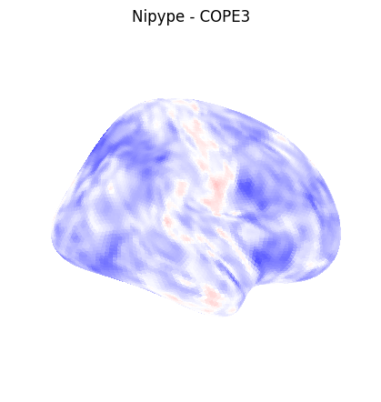
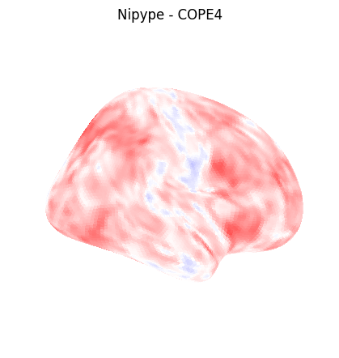
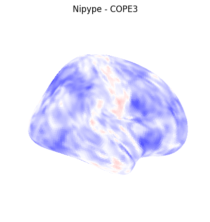
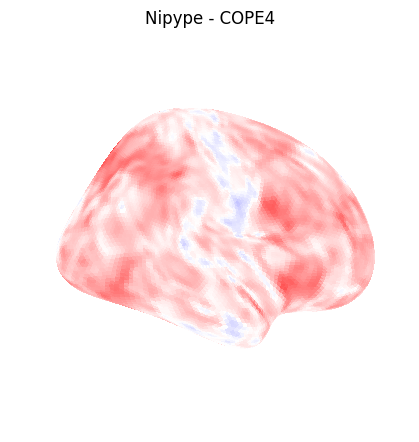

FSL’s fMRI Data Analysis via Nipype#
Author: Monika Doerig
Original peper: https://www.frontiersin.org/articles/10.3389/fnimg.2022.953215/full
Original code: https://osf.io/prg53/?view_only=9d7974834a484cdb972bcc3989589b78
Setup Neurodesk#
%%capture
import os
import sys
IN_COLAB = 'google.colab' in sys.modules
if IN_COLAB:
os.environ["LD_PRELOAD"] = "";
os.environ["APPTAINER_BINDPATH"] = "/content,/tmp,/cvmfs"
os.environ["MPLCONFIGDIR"] = "/content/matplotlib-mpldir"
os.environ["LMOD_CMD"] = "/usr/share/lmod/lmod/libexec/lmod"
!curl -J -O https://raw.githubusercontent.com/NeuroDesk/neurocommand/main/googlecolab_setup.sh
!chmod +x googlecolab_setup.sh
!./googlecolab_setup.sh
os.environ["MODULEPATH"] = ':'.join(map(str, list(map(lambda x: os.path.join(os.path.abspath('/cvmfs/neurodesk.ardc.edu.au/neurodesk-modules/'), x),os.listdir('/cvmfs/neurodesk.ardc.edu.au/neurodesk-modules/')))))
# Output CPU information:
!cat /proc/cpuinfo | grep 'vendor' | uniq
!cat /proc/cpuinfo | grep 'model name' | uniq
vendor_id : GenuineIntel
model name : Intel(R) Xeon(R) CPU E5-2673 v4 @ 2.30GHz
!pip install pandas nilearn matplotlib
Defaulting to user installation because normal site-packages is not writeable
Requirement already satisfied: pandas in /home/runner/.local/lib/python3.8/site-packages (2.0.2)
Requirement already satisfied: nilearn in /home/runner/.local/lib/python3.8/site-packages (0.10.1)
Requirement already satisfied: matplotlib in /home/runner/.local/lib/python3.8/site-packages (3.7.1)
Requirement already satisfied: python-dateutil>=2.8.2 in /home/runner/.local/lib/python3.8/site-packages (from pandas) (2.8.2)
Requirement already satisfied: pytz>=2020.1 in /home/runner/.local/lib/python3.8/site-packages (from pandas) (2023.3)
Requirement already satisfied: tzdata>=2022.1 in /home/runner/.local/lib/python3.8/site-packages (from pandas) (2023.3)
Requirement already satisfied: numpy>=1.20.3 in /home/runner/.local/lib/python3.8/site-packages (from pandas) (1.24.4)
Requirement already satisfied: joblib>=1.0.0 in /home/runner/.local/lib/python3.8/site-packages (from nilearn) (1.2.0)
Requirement already satisfied: lxml in /home/runner/.local/lib/python3.8/site-packages (from nilearn) (4.9.2)
Requirement already satisfied: nibabel>=3.2.0 in /home/runner/.local/lib/python3.8/site-packages (from nilearn) (5.1.0)
Requirement already satisfied: packaging in /usr/local/lib/python3.8/dist-packages (from nilearn) (23.1)
Requirement already satisfied: requests>=2.25.0 in /home/runner/.local/lib/python3.8/site-packages (from nilearn) (2.31.0)
Requirement already satisfied: scikit-learn>=1.0.0 in /home/runner/.local/lib/python3.8/site-packages (from nilearn) (1.2.2)
Requirement already satisfied: scipy>=1.6.0 in /home/runner/.local/lib/python3.8/site-packages (from nilearn) (1.10.1)
Requirement already satisfied: contourpy>=1.0.1 in /home/runner/.local/lib/python3.8/site-packages (from matplotlib) (1.1.0)
Requirement already satisfied: cycler>=0.10 in /home/runner/.local/lib/python3.8/site-packages (from matplotlib) (0.11.0)
Requirement already satisfied: fonttools>=4.22.0 in /home/runner/.local/lib/python3.8/site-packages (from matplotlib) (4.40.0)
Requirement already satisfied: kiwisolver>=1.0.1 in /home/runner/.local/lib/python3.8/site-packages (from matplotlib) (1.4.4)
Requirement already satisfied: pillow>=6.2.0 in /usr/lib/python3/dist-packages (from matplotlib) (7.0.0)
Requirement already satisfied: pyparsing>=2.3.1 in /home/runner/.local/lib/python3.8/site-packages (from matplotlib) (3.1.0)
Requirement already satisfied: importlib-resources>=3.2.0 in /home/runner/.local/lib/python3.8/site-packages (from matplotlib) (5.12.0)
Requirement already satisfied: zipp>=3.1.0 in /home/runner/.local/lib/python3.8/site-packages (from importlib-resources>=3.2.0->matplotlib) (3.15.0)
Requirement already satisfied: six>=1.5 in /usr/lib/python3/dist-packages (from python-dateutil>=2.8.2->pandas) (1.14.0)
Requirement already satisfied: charset-normalizer<4,>=2 in /home/runner/.local/lib/python3.8/site-packages (from requests>=2.25.0->nilearn) (3.1.0)
Requirement already satisfied: idna<4,>=2.5 in /usr/lib/python3/dist-packages (from requests>=2.25.0->nilearn) (2.8)
Requirement already satisfied: urllib3<3,>=1.21.1 in /usr/lib/python3/dist-packages (from requests>=2.25.0->nilearn) (1.25.8)
Requirement already satisfied: certifi>=2017.4.17 in /usr/lib/python3/dist-packages (from requests>=2.25.0->nilearn) (2019.11.28)
Requirement already satisfied: threadpoolctl>=2.0.0 in /home/runner/.local/lib/python3.8/site-packages (from scikit-learn>=1.0.0->nilearn) (3.1.0)
First-level GLM using Nipype FSL#
In this notebook, we recreate the first-level GLM and the first level GLM of FSL GUI using nipype code. For each nipype node, we list the corresponding fsl command from the log file. The dataset we use is a Flanker task, which can be downloaded here.
We also borrow some helps from this document.
#load fsl module
import lmod
await lmod.purge(force=True)
await lmod.load('fsl/6.0.5.1') #Original pipeline: FSL 6.0.4, nipype 1.6.1.
await lmod.list()
Lmod Warning: The environment MODULEPATH has been changed in unexpected ways.
Lmod is unable to use given MODULEPATH. It is using:
"/cvmfs/neurodesk.ardc.edu.au/neurodesk-modules/functional_imaging:/cvmfs/neurodesk.ardc.edu.au/neurodesk-modules/rodent_imaging:/cvmfs/neurodesk.ardc.edu.au/neurodesk-modules/image_registration:/cvmfs/neurodesk.ardc.edu.au/neurodesk-modules/structural_imaging:/cvmfs/neurodesk.ardc.edu.au/neurodesk-modules/image_segmentation:/cvmfs/neurodesk.ardc.edu.au/neurodesk-modules/quantitative_imaging:/cvmfs/neurodesk.ardc.edu.au/neurodesk-modules/workflows:/cvmfs/neurodesk.ardc.edu.au/neurodesk-modules/hippocampus:/cvmfs/neurodesk.ardc.edu.au/neurodesk-modules/image_reconstruction:/cvmfs/neurodesk.ardc.edu.au/neurodesk-modules/data_organisation:/cvmfs/neurodesk.ardc.edu.au/neurodesk-modules/electrophysiology:/cvmfs/neurodesk.ardc.edu.au/neurodesk-modules/phase_processing:/cvmfs/neurodesk.ardc.edu.au/neurodesk-modules/programming:/cvmfs/neurodesk.ardc.edu.au/neurodesk-modules/machine_learning:/cvmfs/neurodesk.ardc.edu.au/neurodesk-modules/diffusion_imaging:/cvmfs/neurodesk.ardc.edu.au/neurodesk-modules/body:/cvmfs/neurodesk.ardc.edu.au/neurodesk-modules/visualization:/cvmfs/neurodesk.ardc.edu.au/neurodesk-modules/spectroscopy:/cvmfs/neurodesk.ardc.edu.au/neurodesk-modules/quality_control:/cvmfs/neurodesk.ardc.edu.au/neurodesk-modules/statistics:/cvmfs/neurodesk.ardc.edu.au/neurodesk-modules/shape_analysis:/cvmfs/neurodesk.ardc.edu.au/neurodesk-modules/spine:/cvmfs/neurodesk.ardc.edu.au/neurodesk-modules/molecular_biology:/cvmfs/neurodesk.ardc.edu.au/neurodesk-modules/bids_apps::".
Please use "module use ..." to change MODULEPATH instead.
['Lmod',
'Warning:',
'The',
'environment',
'MODULEPATH',
'has',
'been',
'changed',
'in',
'unexpected',
'ways.',
'Lmod',
'is',
'unable',
'to',
'use',
'given',
'MODULEPATH.',
'It',
'is',
'using:',
'"/cvmfs/neurodesk.ardc.edu.au/neurodesk-modules/functional_imaging:/cvmfs/neurodesk.ardc.edu.au/neurodesk-modules/rodent_imaging:/cvmfs/neurodesk.ardc.edu.au/neurodesk-modules/image_registration:/cvmfs/neurodesk.ardc.edu.au/neurodesk-modules/structural_imaging:/cvmfs/neurodesk.ardc.edu.au/neurodesk-modules/image_segmentation:/cvmfs/neurodesk.ardc.edu.au/neurodesk-modules/quantitative_imaging:/cvmfs/neurodesk.ardc.edu.au/neurodesk-modules/workflows:/cvmfs/neurodesk.ardc.edu.au/neurodesk-modules/hippocampus:/cvmfs/neurodesk.ardc.edu.au/neurodesk-modules/image_reconstruction:/cvmfs/neurodesk.ardc.edu.au/neurodesk-modules/data_organisation:/cvmfs/neurodesk.ardc.edu.au/neurodesk-modules/electrophysiology:/cvmfs/neurodesk.ardc.edu.au/neurodesk-modules/phase_processing:/cvmfs/neurodesk.ardc.edu.au/neurodesk-modules/programming:/cvmfs/neurodesk.ardc.edu.au/neurodesk-modules/machine_learning:/cvmfs/neurodesk.ardc.edu.au/neurodesk-modules/diffusion_imaging:/cvmfs/neurodesk.ardc.edu.au/neurodesk-modules/body:/cvmfs/neurodesk.ardc.edu.au/neurodesk-modules/visualization:/cvmfs/neurodesk.ardc.edu.au/neurodesk-modules/spectroscopy:/cvmfs/neurodesk.ardc.edu.au/neurodesk-modules/quality_control:/cvmfs/neurodesk.ardc.edu.au/neurodesk-modules/statistics:/cvmfs/neurodesk.ardc.edu.au/neurodesk-modules/shape_analysis:/cvmfs/neurodesk.ardc.edu.au/neurodesk-modules/spine:/cvmfs/neurodesk.ardc.edu.au/neurodesk-modules/molecular_biology:/cvmfs/neurodesk.ardc.edu.au/neurodesk-modules/bids_apps::".',
'Please',
'use',
'"module',
'use',
'to',
'change',
'MODULEPATH',
'instead.',
'fsl/6.0.5.1']
import os
os.environ["FSLDIR"]="/cvmfs/neurodesk.ardc.edu.au/containers/fsl_6.0.5.1_20221016/fsl_6.0.5.1_20221016.simg/opt/fsl-6.0.5.1/"
os.environ["FSLOUTPUTTYPE"]="NIFTI_GZ"
os.environ["SINGULARITY_BINDPATH"]="/data,/neurodesktop-storage,/tmp,/cvmfs"
Preparation#
Import all the relevant libraries needed for the preprocessing stage.
from __future__ import print_function
from __future__ import division
from builtins import str
from builtins import range
from glob import glob
from nipype import Function
from nipype.interfaces import fsl, utility as util, io as nio
import nipype.pipeline.engine as pe # pypeline engine
import nipype.algorithms.modelgen as model # model generation
import nipype.algorithms.rapidart as ra # artifact detection
import matplotlib.pyplot as plt
import nilearn
from nilearn import surface
from nilearn import plotting
# check output type and fsl version
print(fsl.Info.output_type())
print(fsl.Info.version())
NIFTI_GZ
6.0.5.1:57b01774
Set up data path#
# Input: Set the BIDS path
data_dir_first = os.path.join(os.getcwd(), 'ds000102')
# Output: Set path where nipype will store stepwise results
exp_dir_first = os.path.join(os.getcwd(), 'output_level1')
# Input: Set path of first level outputs
data_dir_second = os.path.join(os.getcwd(), 'output_level1/level1_results/')
# Output: Set path where nipype will store stepwise results
exp_dir_second = os.path.join(os.getcwd(), 'output_level2/')
# Input: Set path of second level outputs
data_dir_third = os.path.join(os.getcwd(), 'output_level2/level2_results/')
# Output: Set path where nipype will store stepwise results
exp_dir_third = os.path.join(os.getcwd(), 'output_level3/')
PATTERN = "sub-0*"
!datalad install https://github.com/OpenNeuroDatasets/ds000102.git
!cd ds000102 && datalad get $PATTERN
It is highly recommended to configure Git before using DataLad. Set both 'user.name' and 'user.email' configuration variables.
It is highly recommended to configure Git before using DataLad. Set both 'user.name' and 'user.email' configuration variables.
It is highly recommended to configure Git before using DataLad. Set both 'user.name' and 'user.email' configuration variables.
It is highly recommended to configure Git before using DataLad. Set both 'user.name' and 'user.email' configuration variables.
Total: 0%| | 0.00/550M [00:00<?, ?B/s]
sub-09/func .. bold.nii.gz: 0%| | 0.00/29.2M [00:00<?, ?B/s]
Total: 0%| | 15.8k/550M [00:00<6:52:56, 22.2kB/s]
sub-09/func .. bold.nii.gz: 0%| | 0.00/29.2M [00:00<?, ?B/s]
sub-09/anat .. _T1w.nii.gz: 0%| | 0.00/10.8M [00:00<?, ?B/s]
Total: 0%| | 67.0k/550M [00:00<4:56:09, 31.0kB/s]
sub-09/func .. bold.nii.gz: 0%| | 67.0k/29.2M [00:00<00:58, 499kB/s]
sub-09/func .. bold.nii.gz: 0%| | 68.1k/29.2M [00:00<00:58, 502kB/s]
sub-09/anat .. _T1w.nii.gz: 1%| | 68.2k/10.8M [00:00<00:21, 505kB/s]
Total: 0%| | 412k/550M [00:00<3:28:15, 44.0kB/s]
sub-09/func .. bold.nii.gz: 1%| | 276k/29.2M [00:00<00:46, 626kB/s]
sub-09/func .. bold.nii.gz: 1%| | 173k/29.2M [00:00<00:51, 559kB/s]
sub-09/anat .. _T1w.nii.gz: 2%|▏ | 190k/10.8M [00:00<00:18, 580kB/s]
Total: 0%| | 1.23M/550M [00:01<2:26:01, 62.7kB/s]
sub-09/func .. bold.nii.gz: 3%|▎ | 868k/29.2M [00:00<00:33, 843kB/s]
sub-09/func .. bold.nii.gz: 2%|▏ | 555k/29.2M [00:00<00:38, 736kB/s]
sub-09/anat .. _T1w.nii.gz: 7%|▊ | 765k/10.8M [00:00<00:12, 783kB/s]
Total: 1%|▏ | 3.46M/550M [00:01<1:41:55, 89.4kB/s]
sub-09/func .. bold.nii.gz: 7%|▋ | 2.14M/29.2M [00:00<00:23, 1.17MB/s]
sub-09/func .. bold.nii.gz: 5%|▍ | 1.32M/29.2M [00:00<00:27, 1.01MB/s]
sub-09/anat .. _T1w.nii.gz: 16%|█▋ | 1.76M/10.8M [00:00<00:08, 1.08MB/s]
Total: 1%|▍ | 7.81M/550M [00:01<1:10:52, 128kB/s]
sub-09/func .. bold.nii.gz: 9%|▉ | 2.62M/29.2M [00:00<00:19, 1.40MB/s]
sub-09/anat .. _T1w.nii.gz: 23%|██▎ | 2.49M/10.8M [00:00<00:05, 1.45MB/s]
sub-09/func .. bold.nii.gz: 15%|█▌ | 4.43M/29.2M [00:00<00:15, 1.60MB/s]
Total: 2%|▋ | 10.8M/550M [00:01<49:25, 182kB/s]
sub-09/func .. bold.nii.gz: 13%|█▎ | 3.88M/29.2M [00:00<00:13, 1.90MB/s]
sub-09/anat .. _T1w.nii.gz: 31%|███ | 3.32M/10.8M [00:00<00:03, 1.92MB/s]
sub-09/func .. bold.nii.gz: 19%|█▉ | 5.53M/29.2M [00:00<00:11, 2.15MB/s]
Total: 2%|▊ | 13.6M/550M [00:01<34:32, 259kB/s]
sub-09/func .. bold.nii.gz: 16%|█▌ | 4.70M/29.2M [00:00<00:10, 2.44MB/s]
sub-09/anat .. _T1w.nii.gz: 40%|████ | 4.34M/10.8M [00:00<00:02, 2.54MB/s]
sub-09/func .. bold.nii.gz: 22%|██▏ | 6.45M/29.2M [00:00<00:08, 2.78MB/s]
Total: 3%|█ | 17.8M/550M [00:01<24:03, 369kB/s]
sub-09/anat .. _T1w.nii.gz: 52%|█████▏ | 5.62M/10.8M [00:00<00:01, 3.32MB/s]
sub-09/func .. bold.nii.gz: 25%|██▌ | 7.38M/29.2M [00:01<00:06, 3.52MB/s]
sub-09/func .. bold.nii.gz: 21%|██ | 6.13M/29.2M [00:00<00:07, 3.14MB/s]
Total: 4%|█▏ | 20.6M/550M [00:01<16:50, 524kB/s]
sub-09/anat .. _T1w.nii.gz: 62%|██████▏ | 6.72M/10.8M [00:01<00:00, 4.17MB/s]
sub-09/func .. bold.nii.gz: 29%|██▉ | 8.51M/29.2M [00:01<00:04, 4.41MB/s]
sub-09/func .. bold.nii.gz: 27%|██▋ | 8.00M/29.2M [00:01<00:05, 4.06MB/s]
Total: 4%|█▍ | 24.0M/550M [00:01<11:48, 743kB/s]
sub-09/anat .. _T1w.nii.gz: 79%|███████▉ | 8.54M/10.8M [00:01<00:00, 4.98MB/s]
Total: 5%|█▋ | 28.1M/550M [00:02<08:16, 1.05MB/s]
sub-09/func .. bold.nii.gz: 36%|███▋ | 10.6M/29.2M [00:01<00:03, 5.33MB/s]
sub-09/func .. bold.nii.gz: 34%|███▎ | 9.83M/29.2M [00:01<00:03, 4.87MB/s]
sub-09/anat .. _T1w.nii.gz: 88%|████████▊ | 9.52M/10.8M [00:01<00:00, 5.83MB/s]
Total: 6%|█▊ | 31.3M/550M [00:02<05:50, 1.48MB/s]
sub-09/func .. bold.nii.gz: 41%|████ | 11.9M/29.2M [00:01<00:02, 6.47MB/s]
sub-09/func .. bold.nii.gz: 37%|███▋ | 10.8M/29.2M [00:01<00:03, 5.75MB/s]
sub-09/anat .. _T1w.nii.gz: 100%|██████████| 10.8M/10.8M [00:01<00:00, 6.66MB/s]
Total: 6%|██ | 34.6M/550M [00:02<04:08, 2.08MB/s]
sub-09/func .. bold.nii.gz: 47%|████▋ | 13.7M/29.2M [00:01<00:02, 7.01MB/s]
sub-09/func .. bold.nii.gz: 44%|████▍ | 13.0M/29.2M [00:01<00:02, 6.68MB/s]
Total: 7%|██▏ | 38.6M/550M [00:02<03:00, 2.83MB/s]
sub-09/func .. bold.nii.gz: 51%|█████ | 14.8M/29.2M [00:01<00:01, 7.83MB/s]
sub-09/func .. bold.nii.gz: 49%|████▊ | 14.2M/29.2M [00:01<00:01, 7.69MB/s]
sub-09/func .. bold.nii.gz: 54%|█████▍ | 15.8M/29.2M [00:01<00:01, 8.44MB/s]
Total: 8%|██▍ | 41.5M/550M [00:02<02:13, 3.82MB/s]
sub-09/func .. bold.nii.gz: 54%|█████▍ | 15.8M/29.2M [00:01<00:01, 7.78MB/s]
sub-09/func .. bold.nii.gz: 59%|█████▉ | 17.4M/29.2M [00:02<00:01, 8.46MB/s]
Total: 8%|██▌ | 44.5M/550M [00:02<01:40, 5.04MB/s]
sub-09/func .. bold.nii.gz: 58%|█████▊ | 17.0M/29.2M [00:02<00:01, 8.60MB/s]
Total: 9%|██▋ | 46.9M/550M [00:02<01:16, 6.58MB/s]
sub-09/func .. bold.nii.gz: 66%|██████▌ | 19.1M/29.2M [00:02<00:01, 9.69MB/s]
sub-09/func .. bold.nii.gz: 63%|██████▎ | 18.4M/29.2M [00:02<00:01, 9.71MB/s]
Total: 9%|██▉ | 49.7M/550M [00:02<00:58, 8.56MB/s]
sub-09/func .. bold.nii.gz: 71%|███████ | 20.6M/29.2M [00:02<00:00, 10.8MB/s]
sub-07/anat .. _T1w.nii.gz: 0%| | 0.00/10.7M [00:00<?, ?B/s]
sub-09/func .. bold.nii.gz: 67%|██████▋ | 19.6M/29.2M [00:02<00:00, 10.4MB/s]
Total: 10%|███ | 52.6M/550M [00:03<00:45, 10.8MB/s]
sub-09/func .. bold.nii.gz: 76%|███████▌ | 22.2M/29.2M [00:02<00:00, 12.0MB/s]
sub-09/func .. bold.nii.gz: 72%|███████▏ | 21.1M/29.2M [00:02<00:00, 11.4MB/s]
sub-07/anat .. _T1w.nii.gz: 1%| | 67.1k/10.7M [00:00<00:21, 500kB/s]
Total: 10%|███▏ | 55.7M/550M [00:03<00:37, 13.3MB/s]
sub-09/func .. bold.nii.gz: 81%|████████▏ | 23.8M/29.2M [00:02<00:00, 12.6MB/s]
sub-09/func .. bold.nii.gz: 77%|███████▋ | 22.5M/29.2M [00:02<00:00, 12.2MB/s]
Total: 11%|███▍ | 59.6M/550M [00:03<00:29, 16.4MB/s]
sub-07/anat .. _T1w.nii.gz: 3%|▎ | 276k/10.7M [00:00<00:16, 624kB/s]
sub-09/func .. bold.nii.gz: 91%|█████████ | 26.7M/29.2M [00:02<00:00, 13.2MB/s]
Total: 12%|███▋ | 63.4M/550M [00:03<00:26, 18.7MB/s]
sub-09/func .. bold.nii.gz: 86%|████████▌ | 25.0M/29.2M [00:02<00:00, 12.1MB/s]
sub-07/anat .. _T1w.nii.gz: 16%|█▋ | 1.69M/10.7M [00:00<00:10, 859kB/s]
Total: 12%|███▉ | 66.7M/550M [00:03<00:22, 21.4MB/s]
sub-09/func .. bold.nii.gz: 90%|████████▉ | 26.3M/29.2M [00:02<00:00, 12.2MB/s]
sub-09/func .. bold.nii.gz: 99%|█████████▊| 28.8M/29.2M [00:02<00:00, 12.2MB/s]
Total: 13%|████ | 69.7M/550M [00:03<00:20, 23.5MB/s]
sub-07/anat .. _T1w.nii.gz: 34%|███▍ | 3.70M/10.7M [00:00<00:05, 1.18MB/s]
sub-09/func .. bold.nii.gz: 97%|█████████▋| 28.2M/29.2M [00:02<00:00, 11.2MB/s]
Total: 13%|████▎ | 73.2M/550M [00:03<00:20, 22.8MB/s]
sub-07/anat .. _T1w.nii.gz: 42%|████▏ | 4.50M/10.7M [00:00<00:03, 1.59MB/s]
sub-07/anat .. _T1w.nii.gz: 50%|█████ | 5.38M/10.7M [00:00<00:02, 2.11MB/s]
sub-07/anat .. _T1w.nii.gz: 57%|█████▋ | 6.12M/10.7M [00:00<00:01, 2.68MB/s]
Total: 14%|████▍ | 76.4M/550M [00:04<00:28, 16.9MB/s]
sub-07/anat .. _T1w.nii.gz: 67%|██████▋ | 7.18M/10.7M [00:01<00:01, 3.44MB/s]
sub-07/anat .. _T1w.nii.gz: 78%|███████▊ | 8.33M/10.7M [00:01<00:00, 4.35MB/s]
Total: 14%|████▌ | 79.5M/550M [00:04<00:28, 16.4MB/s]
sub-07/anat .. _T1w.nii.gz: 96%|█████████▌| 10.3M/10.7M [00:01<00:00, 5.67MB/s]
sub-04/anat .. _T1w.nii.gz: 0%| | 0.00/10.7M [00:00<?, ?B/s]
Total (1 ok out of 24): 15%|██▏ | 79.9M/550M [00:04<00:28, 16.4MB/s]
sub-04/anat .. _T1w.nii.gz: 1%| | 68.2k/10.7M [00:00<00:21, 505kB/s]
sub-04/anat .. _T1w.nii.gz: 3%|▎ | 277k/10.7M [00:00<00:16, 625kB/s]
sub-04/func .. bold.nii.gz: 0%| | 0.00/29.1M [00:00<?, ?B/s]
sub-04/anat .. _T1w.nii.gz: 10%|█▏ | 1.11M/10.7M [00:00<00:11, 859kB/s]
sub-04/func .. bold.nii.gz: 0%| | 58.9k/29.1M [00:00<01:07, 427kB/s]
Total (1 ok out of 24): 15%|██▎ | 82.8M/550M [00:04<00:42, 11.1MB/s]
sub-04/anat .. _T1w.nii.gz: 26%|██▌ | 2.79M/10.7M [00:00<00:06, 1.20MB/s]
sub-04/func .. bold.nii.gz: 1%| | 163k/29.1M [00:00<00:58, 496kB/s]
sub-04/func .. bold.nii.gz: 0%| | 0.00/29.1M [00:00<?, ?B/s]
Total (1 ok out of 24): 15%|██▎ | 84.6M/550M [00:04<00:37, 12.5MB/s]
sub-04/anat .. _T1w.nii.gz: 42%|████▏ | 4.48M/10.7M [00:00<00:03, 1.66MB/s]
sub-04/func .. bold.nii.gz: 2%|▎ | 703k/29.1M [00:00<00:42, 673kB/s]
Total (1 ok out of 24): 16%|██▎ | 86.7M/550M [00:04<00:32, 14.2MB/s]
sub-04/anat .. _T1w.nii.gz: 56%|█████▋ | 6.05M/10.7M [00:00<00:02, 2.27MB/s]
sub-04/func .. bold.nii.gz: 0%| | 67.1k/29.1M [00:00<00:59, 489kB/s]
sub-04/func .. bold.nii.gz: 6%|▋ | 1.89M/29.1M [00:00<00:28, 938kB/s]
Total (1 ok out of 24): 16%|██▍ | 89.5M/550M [00:05<00:27, 16.7MB/s]
sub-04/anat .. _T1w.nii.gz: 71%|███████ | 7.59M/10.7M [00:00<00:01, 3.05MB/s]
sub-04/func .. bold.nii.gz: 1%| | 172k/29.1M [00:00<00:52, 548kB/s]
sub-04/func .. bold.nii.gz: 11%|█▏ | 3.28M/29.1M [00:00<00:19, 1.30MB/s]
Total (1 ok out of 24): 17%|██▌ | 92.5M/550M [00:05<00:23, 19.3MB/s]
sub-04/anat .. _T1w.nii.gz: 85%|████████▌ | 9.15M/10.7M [00:00<00:00, 4.03MB/s]
sub-04/func .. bold.nii.gz: 17%|█▋ | 4.87M/29.1M [00:00<00:13, 1.80MB/s]
sub-04/func .. bold.nii.gz: 2%|▏ | 554k/29.1M [00:00<00:39, 724kB/s]
Total (1 ok out of 24): 17%|██▌ | 95.8M/550M [00:05<00:20, 22.0MB/s]
sub-04/anat .. _T1w.nii.gz: 100%|██████████| 10.7M/10.7M [00:01<00:00, 5.03MB/s]
sub-04/func .. bold.nii.gz: 20%|██ | 5.90M/29.1M [00:00<00:09, 2.39MB/s]
Total (1 ok out of 24): 18%|██▋ | 98.7M/550M [00:05<00:22, 20.4MB/s]
sub-04/func .. bold.nii.gz: 25%|██▍ | 7.18M/29.1M [00:00<00:06, 3.16MB/s]
sub-04/func .. bold.nii.gz: 9%|▉ | 2.71M/29.1M [00:00<00:26, 1.01MB/s]
sub-06/anat .. _T1w.nii.gz: 0%| | 0.00/10.6M [00:00<?, ?B/s]
Total (1 ok out of 24): 18%|██▉ | 102M/550M [00:05<00:21, 21.2MB/s]
sub-04/func .. bold.nii.gz: 29%|██▉ | 8.39M/29.1M [00:01<00:05, 4.05MB/s]
sub-04/func .. bold.nii.gz: 13%|█▎ | 3.84M/29.1M [00:00<00:18, 1.38MB/s]
sub-06/anat .. _T1w.nii.gz: 8%|▊ | 805k/10.6M [00:00<00:01, 7.68MB/s]
Total (1 ok out of 24): 19%|███ | 104M/550M [00:05<00:19, 22.6MB/s]
sub-04/func .. bold.nii.gz: 17%|█▋ | 4.83M/29.1M [00:00<00:13, 1.86MB/s]
sub-06/anat .. _T1w.nii.gz: 17%|█▋ | 1.84M/10.6M [00:00<00:01, 8.06MB/s]
Total (1 ok out of 24): 20%|███▏ | 108M/550M [00:05<00:17, 24.9MB/s]
sub-04/func .. bold.nii.gz: 21%|██ | 6.12M/29.1M [00:00<00:09, 2.51MB/s]
sub-04/func .. bold.nii.gz: 35%|███▌ | 10.2M/29.1M [00:01<00:03, 4.83MB/s]
sub-06/anat .. _T1w.nii.gz: 27%|██▋ | 2.85M/10.6M [00:00<00:00, 8.58MB/s]
Total (1 ok out of 24): 20%|███▏ | 111M/550M [00:05<00:16, 26.2MB/s]
sub-04/func .. bold.nii.gz: 24%|██▍ | 7.10M/29.1M [00:01<00:06, 3.23MB/s]
sub-06/anat .. _T1w.nii.gz: 37%|███▋ | 3.98M/10.6M [00:00<00:00, 9.23MB/s]
sub-04/func .. bold.nii.gz: 40%|████ | 11.8M/29.1M [00:01<00:03, 5.67MB/s]
Total (1 ok out of 24): 21%|███▎ | 115M/550M [00:05<00:14, 29.1MB/s]
sub-04/func .. bold.nii.gz: 29%|██▊ | 8.33M/29.1M [00:01<00:05, 4.14MB/s]
sub-06/anat .. _T1w.nii.gz: 46%|████▋ | 4.92M/10.6M [00:00<00:00, 9.08MB/s]
sub-04/func .. bold.nii.gz: 33%|███▎ | 9.45M/29.1M [00:01<00:03, 5.10MB/s]
Total (1 ok out of 24): 22%|███▍ | 119M/550M [00:06<00:14, 30.4MB/s]
sub-04/func .. bold.nii.gz: 47%|████▋ | 13.6M/29.1M [00:01<00:02, 6.75MB/s]
sub-06/anat .. _T1w.nii.gz: 57%|█████▋ | 6.07M/10.6M [00:00<00:00, 9.65MB/s]
sub-04/func .. bold.nii.gz: 36%|███▌ | 10.5M/29.1M [00:01<00:03, 6.05MB/s]
Total (1 ok out of 24): 22%|███▌ | 122M/550M [00:06<00:13, 31.8MB/s]
sub-04/func .. bold.nii.gz: 51%|█████ | 14.9M/29.1M [00:01<00:01, 7.90MB/s]
sub-04/func .. bold.nii.gz: 41%|████ | 11.8M/29.1M [00:01<00:02, 7.16MB/s]
Total (1 ok out of 24): 23%|███▋ | 126M/550M [00:06<00:12, 32.8MB/s]
sub-04/func .. bold.nii.gz: 56%|█████▌ | 16.2M/29.1M [00:01<00:01, 9.05MB/s]
sub-06/anat .. _T1w.nii.gz: 73%|███████▎ | 7.72M/10.6M [00:00<00:00, 9.57MB/s]
sub-04/func .. bold.nii.gz: 60%|██████ | 17.5M/29.1M [00:01<00:01, 9.90MB/s]
Total (1 ok out of 24): 24%|███▊ | 130M/550M [00:06<00:13, 31.7MB/s]
sub-06/anat .. _T1w.nii.gz: 88%|████████▊ | 9.39M/10.6M [00:00<00:00, 10.5MB/s]
sub-04/func .. bold.nii.gz: 47%|████▋ | 13.8M/29.1M [00:01<00:01, 7.70MB/s]
Total (1 ok out of 24): 24%|███▉ | 133M/550M [00:06<00:13, 30.2MB/s]
sub-06/anat .. _T1w.nii.gz: 100%|██████████| 10.6M/10.6M [00:01<00:00, 10.3MB/s]
Total (2 ok out of 24): 24%|███▉ | 133M/550M [00:06<00:13, 30.2MB/s]
Total (3 ok out of 24): 24%|███▉ | 133M/550M [00:06<00:13, 30.2MB/s]
sub-04/func .. bold.nii.gz: 67%|██████▋ | 19.5M/29.1M [00:02<00:00, 9.85MB/s]
Total (4 ok out of 24): 25%|███▉ | 135M/550M [00:06<00:13, 30.2MB/s]
sub-04/func .. bold.nii.gz: 53%|█████▎ | 15.3M/29.1M [00:01<00:01, 7.73MB/s]
Total (4 ok out of 24): 25%|███▉ | 137M/550M [00:06<00:14, 29.1MB/s]
sub-06/func .. bold.nii.gz: 0%| | 0.00/29.4M [00:00<?, ?B/s]
sub-04/func .. bold.nii.gz: 58%|█████▊ | 16.8M/29.1M [00:01<00:01, 9.00MB/s]
sub-04/func .. bold.nii.gz: 75%|███████▌ | 21.8M/29.1M [00:02<00:00, 10.2MB/s]
Total (4 ok out of 24): 26%|████ | 140M/550M [00:06<00:15, 26.5MB/s]
sub-06/func .. bold.nii.gz: 4%|▎ | 1.05M/29.4M [00:00<00:02, 10.1MB/s]
sub-04/func .. bold.nii.gz: 81%|████████ | 23.6M/29.1M [00:02<00:00, 10.8MB/s]
Total (4 ok out of 24): 26%|████▏ | 144M/550M [00:07<00:15, 26.8MB/s]
sub-06/func .. bold.nii.gz: 6%|▌ | 1.75M/29.4M [00:00<00:03, 8.69MB/s]
sub-04/func .. bold.nii.gz: 65%|██████▍ | 18.8M/29.1M [00:02<00:01, 9.19MB/s]
Total (4 ok out of 24): 27%|████▎ | 147M/550M [00:07<00:14, 27.0MB/s]
sub-06/func .. bold.nii.gz: 9%|▉ | 2.73M/29.4M [00:00<00:03, 8.87MB/s]
sub-04/func .. bold.nii.gz: 69%|██████▉ | 20.1M/29.1M [00:02<00:00, 9.99MB/s]
sub-04/func .. bold.nii.gz: 88%|████████▊ | 25.5M/29.1M [00:02<00:00, 10.9MB/s]
Total (4 ok out of 24): 27%|████▍ | 151M/550M [00:07<00:13, 29.0MB/s]
sub-06/func .. bold.nii.gz: 13%|█▎ | 3.90M/29.4M [00:00<00:02, 9.55MB/s]
sub-04/func .. bold.nii.gz: 92%|█████████▏| 26.8M/29.1M [00:02<00:00, 11.2MB/s]
Total (4 ok out of 24): 28%|████▍ | 154M/550M [00:07<00:13, 30.2MB/s]
sub-06/func .. bold.nii.gz: 17%|█▋ | 5.04M/29.4M [00:00<00:02, 10.0MB/s]
sub-04/func .. bold.nii.gz: 76%|███████▌ | 22.0M/29.1M [00:02<00:00, 9.88MB/s]
Total (4 ok out of 24): 29%|████▌ | 158M/550M [00:07<00:12, 32.6MB/s]
sub-06/func .. bold.nii.gz: 21%|██ | 6.06M/29.4M [00:00<00:02, 10.1MB/s]
sub-04/func .. bold.nii.gz: 81%|████████ | 23.6M/29.1M [00:02<00:00, 11.1MB/s]
sub-04/func .. bold.nii.gz: 100%|██████████| 29.1M/29.1M [00:02<00:00, 11.3MB/s]
Total (5 ok out of 24): 29%|████▋ | 160M/550M [00:07<00:11, 32.6MB/s]
Total (6 ok out of 24): 29%|████▋ | 160M/550M [00:07<00:11, 32.6MB/s]
sub-06/func .. bold.nii.gz: 24%|██▍ | 7.15M/29.4M [00:00<00:02, 10.3MB/s]
Total (6 ok out of 24): 29%|████▋ | 162M/550M [00:07<00:11, 33.5MB/s]
sub-04/func .. bold.nii.gz: 87%|████████▋ | 25.4M/29.1M [00:02<00:00, 10.3MB/s]
sub-03/anat .. _T1w.nii.gz: 0%| | 0.00/10.7M [00:00<?, ?B/s]
sub-06/func .. bold.nii.gz: 28%|██▊ | 8.17M/29.4M [00:00<00:02, 9.70MB/s]
Total (6 ok out of 24): 30%|████▊ | 165M/550M [00:07<00:14, 26.3MB/s]
sub-03/anat .. _T1w.nii.gz: 7%|▋ | 698k/10.7M [00:00<00:01, 6.49MB/s]
sub-04/func .. bold.nii.gz: 94%|█████████▍| 27.4M/29.1M [00:02<00:00, 10.2MB/s]
sub-06/func .. bold.nii.gz: 33%|███▎ | 9.74M/29.4M [00:01<00:02, 9.25MB/s]
Total (6 ok out of 24): 31%|████▉ | 169M/550M [00:07<00:13, 28.7MB/s]
sub-03/anat .. _T1w.nii.gz: 19%|█▉ | 2.02M/10.7M [00:00<00:01, 7.66MB/s]
sub-06/func .. bold.nii.gz: 37%|███▋ | 10.9M/29.4M [00:01<00:01, 9.88MB/s]
sub-04/func .. bold.nii.gz: 98%|█████████▊| 28.5M/29.1M [00:03<00:00, 10.3MB/s]
sub-03/anat .. _T1w.nii.gz: 26%|██▋ | 2.82M/10.7M [00:00<00:01, 7.74MB/s]
Total (6 ok out of 24): 31%|█████ | 173M/550M [00:07<00:13, 28.4MB/s]
Total (7 ok out of 24): 32%|█████ | 174M/550M [00:07<00:13, 28.4MB/s]
sub-06/func .. bold.nii.gz: 41%|████ | 12.0M/29.4M [00:01<00:01, 10.0MB/s]
sub-03/anat .. _T1w.nii.gz: 38%|███▊ | 4.09M/10.7M [00:00<00:00, 8.76MB/s]
Total (7 ok out of 24): 32%|█████▏ | 177M/550M [00:08<00:14, 25.9MB/s]
sub-06/func .. bold.nii.gz: 45%|████▍ | 13.1M/29.4M [00:01<00:01, 10.3MB/s]
sub-03/func .. bold.nii.gz: 0%| | 0.00/28.8M [00:00<?, ?B/s]
sub-03/anat .. _T1w.nii.gz: 46%|████▌ | 4.95M/10.7M [00:00<00:00, 7.79MB/s]
Total (7 ok out of 24): 33%|█████▏ | 180M/550M [00:08<00:14, 25.3MB/s]
sub-03/anat .. _T1w.nii.gz: 56%|█████▌ | 5.98M/10.7M [00:00<00:00, 8.39MB/s]
sub-06/func .. bold.nii.gz: 51%|█████ | 15.0M/29.4M [00:01<00:01, 9.93MB/s]
Total (7 ok out of 24): 33%|█████▎ | 183M/550M [00:08<00:13, 26.6MB/s]
sub-03/func .. bold.nii.gz: 8%|▊ | 2.41M/28.8M [00:00<00:02, 12.1MB/s]
sub-03/anat .. _T1w.nii.gz: 73%|███████▎ | 7.78M/10.7M [00:00<00:00, 9.99MB/s]
sub-06/func .. bold.nii.gz: 55%|█████▌ | 16.2M/29.4M [00:01<00:01, 10.3MB/s]
Total (7 ok out of 24): 34%|█████▍ | 188M/550M [00:08<00:11, 30.7MB/s]
sub-03/func .. bold.nii.gz: 12%|█▏ | 3.55M/28.8M [00:00<00:02, 11.7MB/s]
sub-03/anat .. _T1w.nii.gz: 83%|████████▎ | 8.91M/10.7M [00:00<00:00, 10.3MB/s]
sub-06/func .. bold.nii.gz: 60%|█████▉ | 17.5M/29.4M [00:01<00:01, 10.8MB/s]
sub-03/func .. bold.nii.gz: 16%|█▌ | 4.47M/28.8M [00:00<00:02, 10.8MB/s]
Total (7 ok out of 24): 35%|█████▌ | 192M/550M [00:08<00:11, 31.5MB/s]
sub-03/anat .. _T1w.nii.gz: 95%|█████████▍| 10.1M/10.7M [00:00<00:00, 10.8MB/s]
Total (8 ok out of 24): 35%|█████▌ | 193M/550M [00:08<00:11, 31.5MB/s]
sub-03/func .. bold.nii.gz: 20%|█▉ | 5.67M/28.8M [00:00<00:02, 11.0MB/s]
Total (8 ok out of 24): 35%|█████▋ | 195M/550M [00:08<00:12, 27.4MB/s]
sub-06/func .. bold.nii.gz: 66%|██████▋ | 19.5M/29.4M [00:01<00:00, 10.5MB/s]
sub-03/func .. bold.nii.gz: 24%|██▎ | 6.82M/28.8M [00:00<00:01, 11.1MB/s]
sub-06/func .. bold.nii.gz: 72%|███████▏ | 21.1M/29.4M [00:02<00:00, 11.6MB/s]
Total (8 ok out of 24): 36%|█████▊ | 200M/550M [00:08<00:11, 29.3MB/s]
sub-03/func .. bold.nii.gz: 30%|██▉ | 8.50M/28.8M [00:00<00:01, 12.1MB/s]
sub-02/anat .. _T1w.nii.gz: 0%| | 0.00/10.7M [00:00<?, ?B/s]
sub-03/func .. bold.nii.gz: 34%|███▍ | 9.80M/28.8M [00:00<00:01, 12.3MB/s]
Total (8 ok out of 24): 37%|█████▉ | 203M/550M [00:09<00:12, 28.7MB/s]
sub-06/func .. bold.nii.gz: 79%|███████▉ | 23.2M/29.4M [00:02<00:00, 11.0MB/s]
sub-03/func .. bold.nii.gz: 38%|███▊ | 11.0M/28.8M [00:00<00:01, 12.3MB/s]
Total (8 ok out of 24): 37%|█████▉ | 206M/550M [00:09<00:11, 29.4MB/s]
sub-02/anat .. _T1w.nii.gz: 17%|█▋ | 1.86M/10.7M [00:00<00:00, 9.29MB/s]
sub-02/anat .. _T1w.nii.gz: 28%|██▊ | 3.03M/10.7M [00:00<00:00, 9.89MB/s]
Total (8 ok out of 24): 38%|██████ | 210M/550M [00:09<00:12, 27.0MB/s]
sub-06/func .. bold.nii.gz: 85%|████████▍ | 24.9M/29.4M [00:02<00:00, 10.2MB/s]
sub-03/func .. bold.nii.gz: 45%|████▍ | 12.8M/28.8M [00:01<00:01, 11.0MB/s]
sub-02/anat .. _T1w.nii.gz: 37%|███▋ | 3.96M/10.7M [00:00<00:00, 9.63MB/s]
Total (8 ok out of 24): 39%|██████▏ | 213M/550M [00:09<00:12, 27.9MB/s]
sub-06/func .. bold.nii.gz: 89%|████████▊ | 26.0M/29.4M [00:02<00:00, 10.5MB/s]
sub-02/anat .. _T1w.nii.gz: 48%|████▊ | 5.20M/10.7M [00:00<00:00, 10.0MB/s]
Total (8 ok out of 24): 39%|██████▎ | 217M/550M [00:09<00:11, 30.1MB/s]
sub-06/func .. bold.nii.gz: 94%|█████████▍| 27.6M/29.4M [00:02<00:00, 11.6MB/s]
sub-03/func .. bold.nii.gz: 51%|█████ | 14.6M/28.8M [00:01<00:01, 10.3MB/s]
sub-02/anat .. _T1w.nii.gz: 57%|█████▋ | 6.13M/10.7M [00:00<00:00, 9.69MB/s]
Total (8 ok out of 24): 40%|██████▍ | 220M/550M [00:09<00:10, 30.5MB/s]
sub-06/func .. bold.nii.gz: 100%|██████████| 29.4M/29.4M [00:02<00:00, 11.8MB/s]
Total (9 ok out of 24): 40%|██████▍ | 221M/550M [00:09<00:10, 30.5MB/s]
sub-02/anat .. _T1w.nii.gz: 67%|██████▋ | 7.22M/10.7M [00:00<00:00, 8.74MB/s]
sub-03/func .. bold.nii.gz: 56%|█████▌ | 16.2M/28.8M [00:01<00:01, 9.32MB/s]
Total (9 ok out of 24): 41%|██████▍ | 223M/550M [00:09<00:11, 27.7MB/s]
sub-03/func .. bold.nii.gz: 0%| | 0.00/28.8M [00:00<?, ?B/s]
sub-02/anat .. _T1w.nii.gz: 82%|████████▏ | 8.80M/10.7M [00:00<00:00, 9.01MB/s]
sub-03/func .. bold.nii.gz: 61%|██████▏ | 17.7M/28.8M [00:01<00:01, 8.68MB/s]
Total (9 ok out of 24): 41%|██████▌ | 227M/550M [00:09<00:13, 24.0MB/s]
sub-02/anat .. _T1w.nii.gz: 91%|█████████ | 9.79M/10.7M [00:01<00:00, 9.13MB/s]
sub-03/func .. bold.nii.gz: 65%|██████▌ | 18.8M/28.8M [00:01<00:01, 9.04MB/s]
Total (9 ok out of 24): 42%|██████▋ | 231M/550M [00:10<00:11, 26.9MB/s]
sub-03/func .. bold.nii.gz: 7%|▋ | 1.93M/28.8M [00:00<00:02, 9.45MB/s]
sub-02/func .. bold.nii.gz: 0%| | 0.00/29.2M [00:00<?, ?B/s]
Total (9 ok out of 24): 43%|██████▊ | 235M/550M [00:10<00:12, 24.7MB/s]
sub-03/func .. bold.nii.gz: 74%|███████▍ | 21.3M/28.8M [00:02<00:00, 9.86MB/s]
sub-03/func .. bold.nii.gz: 15%|█▍ | 4.22M/28.8M [00:00<00:02, 9.71MB/s]
Total (9 ok out of 24): 43%|██████▉ | 237M/550M [00:10<00:12, 26.0MB/s]
sub-03/func .. bold.nii.gz: 18%|█▊ | 5.23M/28.8M [00:00<00:02, 9.83MB/s]
sub-02/func .. bold.nii.gz: 6%|▌ | 1.82M/29.2M [00:00<00:03, 9.01MB/s]
Total (9 ok out of 24): 44%|██████▉ | 240M/550M [00:10<00:11, 26.4MB/s]
sub-03/func .. bold.nii.gz: 80%|███████▉ | 23.0M/28.8M [00:02<00:00, 9.38MB/s]
sub-03/func .. bold.nii.gz: 23%|██▎ | 6.58M/28.8M [00:00<00:02, 10.7MB/s]
sub-02/func .. bold.nii.gz: 9%|▉ | 2.63M/29.2M [00:00<00:03, 8.68MB/s]
Total (9 ok out of 24): 44%|███████ | 243M/550M [00:10<00:11, 27.1MB/s]
sub-03/func .. bold.nii.gz: 84%|████████▎ | 24.1M/28.8M [00:02<00:00, 9.29MB/s]
sub-02/func .. bold.nii.gz: 13%|█▎ | 3.70M/29.2M [00:00<00:02, 9.18MB/s]
Total (9 ok out of 24): 45%|███████▏ | 246M/550M [00:10<00:11, 27.4MB/s]
sub-03/func .. bold.nii.gz: 28%|██▊ | 8.12M/28.8M [00:00<00:02, 9.95MB/s]
sub-02/func .. bold.nii.gz: 16%|█▌ | 4.73M/29.2M [00:00<00:02, 9.49MB/s]
sub-03/func .. bold.nii.gz: 90%|█████████ | 26.0M/28.8M [00:02<00:00, 9.55MB/s]
Total (9 ok out of 24): 45%|███████▎ | 250M/550M [00:10<00:11, 27.2MB/s]
sub-03/func .. bold.nii.gz: 32%|███▏ | 9.33M/28.8M [00:00<00:01, 9.82MB/s]
sub-02/func .. bold.nii.gz: 20%|█▉ | 5.72M/29.2M [00:00<00:02, 9.59MB/s]
Total (9 ok out of 24): 46%|███████▍ | 254M/550M [00:10<00:10, 28.6MB/s]
sub-03/func .. bold.nii.gz: 37%|███▋ | 10.5M/28.8M [00:01<00:01, 10.2MB/s]
sub-02/func .. bold.nii.gz: 23%|██▎ | 6.78M/29.2M [00:00<00:02, 9.88MB/s]
sub-03/func .. bold.nii.gz: 98%|█████████▊| 28.1M/28.8M [00:02<00:00, 9.81MB/s]
Total (9 ok out of 24): 47%|███████▍ | 257M/550M [00:10<00:10, 28.9MB/s]
sub-03/func .. bold.nii.gz: 40%|████ | 11.6M/28.8M [00:01<00:01, 9.70MB/s]
sub-02/func .. bold.nii.gz: 27%|██▋ | 7.76M/29.2M [00:00<00:02, 9.85MB/s]
sub-02/anat .. _T1w.nii.gz: 100%|██████████| 10.7M/10.7M [00:02<00:00, 2.42MB/s]
Total (10 ok out of 24): 47%|███████ | 258M/550M [00:11<00:10, 28.9MB/s]
sub-03/func .. bold.nii.gz: 44%|████▎ | 12.6M/28.8M [00:01<00:01, 9.58MB/s]
Total (10 ok out of 24): 47%|███████ | 261M/550M [00:11<00:11, 26.0MB/s]
sub-03/func .. bold.nii.gz: 48%|████▊ | 13.8M/28.8M [00:01<00:01, 10.2MB/s]
sub-02/func .. bold.nii.gz: 33%|███▎ | 9.75M/29.2M [00:01<00:01, 9.84MB/s]
Total (10 ok out of 24): 48%|███████▏ | 264M/550M [00:11<00:11, 25.2MB/s]
sub-03/func .. bold.nii.gz: 53%|█████▎ | 15.4M/28.8M [00:01<00:01, 11.5MB/s]
sub-02/func .. bold.nii.gz: 39%|███▉ | 11.4M/29.2M [00:01<00:01, 11.1MB/s]
Total (10 ok out of 24): 49%|███████▎ | 267M/550M [00:11<00:10, 27.0MB/s]
sub-03/func .. bold.nii.gz: 59%|█████▉ | 17.0M/28.8M [00:01<00:00, 12.6MB/s]
sub-02/func .. bold.nii.gz: 45%|████▍ | 13.0M/29.2M [00:01<00:01, 12.2MB/s]
Total (10 ok out of 24): 49%|███████▍ | 271M/550M [00:11<00:09, 28.3MB/s]
sub-03/func .. bold.nii.gz: 65%|██████▍ | 18.6M/28.8M [00:01<00:00, 13.4MB/s]
sub-02/func .. bold.nii.gz: 53%|█████▎ | 15.4M/29.2M [00:01<00:01, 13.3MB/s]
sub-06/func .. bold.nii.gz: 0%| | 0.00/29.4M [00:00<?, ?B/s]
Total (10 ok out of 24): 50%|███████▍ | 274M/550M [00:11<00:09, 30.4MB/s]
sub-03/func .. bold.nii.gz: 72%|███████▏ | 20.7M/28.8M [00:01<00:00, 13.5MB/s]
sub-06/func .. bold.nii.gz: 0%| | 68.7k/29.4M [00:00<00:52, 562kB/s]
Total (10 ok out of 24): 51%|███████▌ | 278M/550M [00:11<00:08, 32.1MB/s]
sub-02/func .. bold.nii.gz: 60%|██████ | 17.6M/29.2M [00:01<00:00, 13.5MB/s]
sub-03/func .. bold.nii.gz: 80%|███████▉ | 22.9M/28.8M [00:01<00:00, 13.9MB/s]
sub-02/func .. bold.nii.gz: 65%|██████▌ | 19.1M/29.2M [00:01<00:00, 13.8MB/s]
sub-06/func .. bold.nii.gz: 1%| | 260k/29.4M [00:00<00:42, 686kB/s]
Total (10 ok out of 24): 51%|███████▋ | 283M/550M [00:11<00:09, 28.6MB/s]
sub-03/func .. bold.nii.gz: 85%|████████▍ | 24.4M/28.8M [00:02<00:00, 14.0MB/s]
sub-06/func .. bold.nii.gz: 3%|▍ | 1.01M/29.4M [00:00<00:30, 932kB/s]
Total (10 ok out of 24): 52%|███████▊ | 287M/550M [00:12<00:08, 31.0MB/s]
sub-02/func .. bold.nii.gz: 73%|███████▎ | 21.4M/29.2M [00:01<00:00, 13.0MB/s]
sub-06/func .. bold.nii.gz: 7%|▋ | 1.95M/29.4M [00:00<00:21, 1.27MB/s]
sub-03/func .. bold.nii.gz: 92%|█████████▏| 26.4M/28.8M [00:02<00:00, 12.4MB/s]
Total (10 ok out of 24): 53%|███████▉ | 290M/550M [00:12<00:08, 29.5MB/s]
sub-06/func .. bold.nii.gz: 10%|▉ | 2.86M/29.4M [00:00<00:15, 1.71MB/s]
sub-02/func .. bold.nii.gz: 81%|████████ | 23.6M/29.2M [00:02<00:00, 12.1MB/s]
Total (10 ok out of 24): 53%|████████ | 294M/550M [00:12<00:08, 29.2MB/s]
sub-06/func .. bold.nii.gz: 14%|█▍ | 4.15M/29.4M [00:00<00:10, 2.31MB/s]
sub-03/func .. bold.nii.gz: 99%|█████████▉| 28.5M/28.8M [00:02<00:00, 11.8MB/s]
Total (11 ok out of 24): 54%|████████ | 296M/550M [00:12<00:08, 29.2MB/s]
Total (11 ok out of 24): 54%|████████ | 298M/550M [00:12<00:09, 25.7MB/s]
sub-02/func .. bold.nii.gz: 86%|████████▋ | 25.2M/29.2M [00:02<00:00, 9.88MB/s]
sub-06/func .. bold.nii.gz: 18%|█▊ | 5.17M/29.4M [00:00<00:08, 2.76MB/s]
sub-06/func .. bold.nii.gz: 22%|██▏ | 6.49M/29.4M [00:01<00:06, 3.61MB/s]
Total (11 ok out of 24): 55%|████████▏ | 302M/550M [00:12<00:10, 23.4MB/s]
sub-02/func .. bold.nii.gz: 94%|█████████▍| 27.4M/29.2M [00:02<00:00, 10.2MB/s]
sub-06/func .. bold.nii.gz: 27%|██▋ | 7.90M/29.4M [00:01<00:04, 4.65MB/s]
Total (11 ok out of 24): 55%|████████▎ | 305M/550M [00:12<00:10, 23.5MB/s]
sub-02/func .. bold.nii.gz: 100%|██████████| 29.2M/29.2M [00:02<00:00, 9.91MB/s]
Total (12 ok out of 24): 56%|████████▎ | 306M/550M [00:12<00:10, 23.5MB/s]
Total (12 ok out of 24): 56%|████████▍ | 307M/550M [00:12<00:10, 24.2MB/s]
sub-06/func .. bold.nii.gz: 35%|███▌ | 10.3M/29.4M [00:01<00:03, 5.71MB/s]
sub-06/func .. bold.nii.gz: 40%|███▉ | 11.7M/29.4M [00:01<00:02, 6.90MB/s]
sub-01/func .. bold.nii.gz: 0%| | 0.00/28.1M [00:00<?, ?B/s]
Total (12 ok out of 24): 56%|████████▍ | 310M/550M [00:13<00:12, 18.8MB/s]
sub-06/func .. bold.nii.gz: 44%|████▍ | 12.9M/29.4M [00:01<00:02, 7.82MB/s]
sub-07/func .. bold.nii.gz: 0%| | 0.00/28.9M [00:00<?, ?B/s]
Total (12 ok out of 24): 57%|████████▌ | 314M/550M [00:13<00:11, 21.3MB/s]
sub-01/func .. bold.nii.gz: 11%|█ | 2.99M/28.1M [00:00<00:01, 14.9MB/s]
sub-07/func .. bold.nii.gz: 0%| | 68.1k/28.9M [00:00<00:57, 503kB/s]
sub-06/func .. bold.nii.gz: 54%|█████▍ | 16.0M/29.4M [00:01<00:01, 9.22MB/s]
Total (12 ok out of 24): 58%|████████▋ | 317M/550M [00:13<00:09, 23.5MB/s]
sub-01/func .. bold.nii.gz: 16%|█▌ | 4.46M/28.1M [00:00<00:01, 14.8MB/s]
sub-07/func .. bold.nii.gz: 1%| | 277k/28.9M [00:00<00:45, 631kB/s]
sub-06/func .. bold.nii.gz: 59%|█████▉ | 17.4M/29.4M [00:01<00:01, 10.1MB/s]
Total (12 ok out of 24): 58%|████████▋ | 320M/550M [00:13<00:09, 24.9MB/s]
sub-01/func .. bold.nii.gz: 21%|██ | 5.79M/28.1M [00:00<00:01, 14.3MB/s]
sub-07/func .. bold.nii.gz: 3%|▎ | 869k/28.9M [00:00<00:32, 859kB/s]
Total (12 ok out of 24): 59%|████████▊ | 324M/550M [00:13<00:08, 26.2MB/s]
sub-01/func .. bold.nii.gz: 25%|██▍ | 6.92M/28.1M [00:00<00:01, 13.0MB/s]
sub-06/func .. bold.nii.gz: 66%|██████▋ | 19.5M/29.4M [00:01<00:00, 10.6MB/s]
sub-07/func .. bold.nii.gz: 6%|▌ | 1.72M/28.9M [00:00<00:23, 1.18MB/s]
Total (12 ok out of 24): 59%|████████▉ | 327M/550M [00:13<00:08, 27.2MB/s]
sub-01/func .. bold.nii.gz: 29%|██▉ | 8.18M/28.1M [00:00<00:01, 12.7MB/s]
sub-07/func .. bold.nii.gz: 9%|▉ | 2.70M/28.9M [00:00<00:16, 1.60MB/s]
sub-06/func .. bold.nii.gz: 71%|███████ | 20.7M/29.4M [00:02<00:00, 10.3MB/s]
Total (12 ok out of 24): 60%|█████████ | 331M/550M [00:13<00:07, 27.6MB/s]
sub-07/func .. bold.nii.gz: 14%|█▎ | 3.91M/28.9M [00:00<00:11, 2.16MB/s]
sub-06/func .. bold.nii.gz: 75%|███████▍ | 22.0M/29.4M [00:02<00:00, 10.8MB/s]
sub-01/func .. bold.nii.gz: 37%|███▋ | 10.3M/28.1M [00:00<00:01, 12.1MB/s]
Total (12 ok out of 24): 61%|█████████▏ | 336M/550M [00:13<00:06, 31.0MB/s]
sub-07/func .. bold.nii.gz: 22%|██▏ | 6.46M/28.9M [00:00<00:07, 2.88MB/s]
sub-06/func .. bold.nii.gz: 82%|████████▏ | 24.0M/29.4M [00:02<00:00, 10.4MB/s]
Total (12 ok out of 24): 62%|█████████▏ | 339M/550M [00:14<00:06, 30.2MB/s]
sub-01/func .. bold.nii.gz: 44%|████▎ | 12.3M/28.1M [00:01<00:01, 10.7MB/s]
sub-07/func .. bold.nii.gz: 26%|██▌ | 7.45M/28.9M [00:00<00:05, 3.65MB/s]
Total (12 ok out of 24): 62%|█████████▎ | 343M/550M [00:14<00:07, 28.3MB/s]
sub-01/func .. bold.nii.gz: 48%|████▊ | 13.4M/28.1M [00:01<00:01, 10.8MB/s]
sub-07/func .. bold.nii.gz: 29%|██▉ | 8.50M/28.9M [00:01<00:04, 4.45MB/s]
sub-06/func .. bold.nii.gz: 89%|████████▉ | 26.3M/29.4M [00:02<00:00, 10.6MB/s]
Total (12 ok out of 24): 63%|█████████▍ | 346M/550M [00:14<00:06, 29.8MB/s]
sub-01/func .. bold.nii.gz: 52%|█████▏ | 14.5M/28.1M [00:01<00:01, 10.9MB/s]
Total (12 ok out of 24): 64%|█████████▌ | 350M/550M [00:14<00:06, 31.4MB/s]
sub-01/func .. bold.nii.gz: 56%|█████▋ | 15.8M/28.1M [00:01<00:01, 11.5MB/s]
sub-06/func .. bold.nii.gz: 97%|█████████▋| 28.4M/29.4M [00:02<00:00, 10.7MB/s]
sub-07/func .. bold.nii.gz: 37%|███▋ | 10.6M/28.9M [00:01<00:03, 5.38MB/s]
sub-01/func .. bold.nii.gz: 61%|██████ | 17.0M/28.1M [00:01<00:00, 11.6MB/s]
Total (12 ok out of 24): 64%|█████████▋ | 354M/550M [00:14<00:06, 32.0MB/s]
sub-07/func .. bold.nii.gz: 41%|████ | 11.9M/28.9M [00:01<00:02, 6.39MB/s]
Total (13 ok out of 24): 65%|█████████▋ | 355M/550M [00:14<00:06, 32.0MB/s]
Total (14 ok out of 24): 65%|█████████▋ | 355M/550M [00:14<00:06, 32.0MB/s]
Total (14 ok out of 24): 65%|█████████▊ | 358M/550M [00:14<00:06, 27.7MB/s]
sub-01/func .. bold.nii.gz: 67%|██████▋ | 18.8M/28.1M [00:01<00:00, 10.5MB/s]
sub-07/func .. bold.nii.gz: 47%|████▋ | 13.5M/28.9M [00:01<00:02, 6.87MB/s]
sub-01/func .. bold.nii.gz: 71%|███████ | 19.9M/28.1M [00:01<00:00, 10.7MB/s]
Total (14 ok out of 24): 66%|█████████▊ | 362M/550M [00:14<00:07, 24.8MB/s]
sub-07/func .. bold.nii.gz: 54%|█████▍ | 15.8M/28.9M [00:01<00:01, 7.76MB/s]
Total (14 ok out of 24): 66%|█████████▉ | 365M/550M [00:14<00:07, 26.0MB/s]
sub-01/func .. bold.nii.gz: 81%|████████ | 22.7M/28.1M [00:01<00:00, 11.5MB/s]
sub-07/func .. bold.nii.gz: 60%|█████▉ | 17.3M/28.9M [00:01<00:01, 9.09MB/s]
sub-02/func .. bold.nii.gz: 0%| | 0.00/29.2M [00:00<?, ?B/s]
Total (14 ok out of 24): 67%|██████████ | 368M/550M [00:15<00:06, 27.3MB/s]
sub-01/func .. bold.nii.gz: 86%|████████▋ | 24.2M/28.1M [00:02<00:00, 12.3MB/s]
sub-07/func .. bold.nii.gz: 64%|██████▍ | 18.5M/28.9M [00:02<00:01, 9.82MB/s]
sub-01/func .. bold.nii.gz: 92%|█████████▏| 25.7M/28.1M [00:02<00:00, 13.0MB/s]
sub-02/func .. bold.nii.gz: 0%| | 66.0k/29.2M [00:00<00:59, 493kB/s]
Total (14 ok out of 24): 68%|██████████▏ | 372M/550M [00:15<00:06, 28.0MB/s]
sub-07/func .. bold.nii.gz: 69%|██████▉ | 20.0M/28.9M [00:02<00:00, 10.9MB/s]
sub-01/func .. bold.nii.gz: 97%|█████████▋| 27.4M/28.1M [00:02<00:00, 13.8MB/s]
sub-02/func .. bold.nii.gz: 1%| | 275k/29.2M [00:00<00:46, 625kB/s]
Total (14 ok out of 24): 68%|██████████▏ | 375M/550M [00:15<00:05, 29.3MB/s]
sub-07/func .. bold.nii.gz: 74%|███████▍ | 21.5M/28.9M [00:02<00:00, 11.8MB/s]
Total (15 ok out of 24): 68%|██████████▎ | 376M/550M [00:15<00:05, 29.3MB/s]
sub-02/func .. bold.nii.gz: 3%|▎ | 832k/29.2M [00:00<00:33, 835kB/s]
sub-01/func .. bold.nii.gz: 0%| | 0.00/28.1M [00:00<?, ?B/s]
Total (15 ok out of 24): 69%|██████████▎ | 379M/550M [00:15<00:07, 22.9MB/s]
sub-07/func .. bold.nii.gz: 81%|████████ | 23.3M/28.9M [00:02<00:00, 10.8MB/s]
sub-02/func .. bold.nii.gz: 5%|▌ | 1.49M/29.2M [00:00<00:24, 1.13MB/s]
Total (15 ok out of 24): 69%|██████████▍ | 381M/550M [00:15<00:07, 23.6MB/s]
sub-01/func .. bold.nii.gz: 7%|▋ | 1.87M/28.1M [00:00<00:02, 9.44MB/s]
Total (15 ok out of 24): 70%|██████████▍ | 384M/550M [00:15<00:06, 24.0MB/s]
sub-07/func .. bold.nii.gz: 87%|████████▋ | 25.1M/28.9M [00:02<00:00, 9.94MB/s]
sub-02/func .. bold.nii.gz: 13%|█▎ | 3.79M/29.2M [00:00<00:16, 1.55MB/s]
sub-01/func .. bold.nii.gz: 10%|█ | 2.94M/28.1M [00:00<00:02, 9.76MB/s]
Total (15 ok out of 24): 70%|██████████▌ | 387M/550M [00:15<00:06, 25.8MB/s]
sub-02/func .. bold.nii.gz: 16%|█▋ | 4.80M/29.2M [00:00<00:11, 2.08MB/s]
sub-01/func .. bold.nii.gz: 14%|█▍ | 3.98M/28.1M [00:00<00:02, 9.95MB/s]
Total (15 ok out of 24): 71%|██████████▋ | 390M/550M [00:15<00:05, 27.4MB/s]
sub-07/func .. bold.nii.gz: 93%|█████████▎| 27.0M/28.9M [00:02<00:00, 9.77MB/s]
sub-02/func .. bold.nii.gz: 20%|██ | 5.92M/29.2M [00:00<00:08, 2.74MB/s]
sub-01/func .. bold.nii.gz: 17%|█▋ | 4.83M/28.1M [00:00<00:02, 9.34MB/s]
Total (15 ok out of 24): 71%|██████████▋ | 393M/550M [00:16<00:05, 28.2MB/s]
sub-07/func .. bold.nii.gz: 97%|█████████▋| 28.1M/28.9M [00:02<00:00, 10.2MB/s]
sub-02/func .. bold.nii.gz: 23%|██▎ | 6.80M/29.2M [00:01<00:06, 3.44MB/s]
sub-01/func .. bold.nii.gz: 21%|██ | 5.80M/28.1M [00:00<00:02, 9.28MB/s]
Total (16 ok out of 24): 72%|██████████▊ | 396M/550M [00:16<00:05, 28.2MB/s]
Total (16 ok out of 24): 72%|██████████▊ | 397M/550M [00:16<00:05, 28.2MB/s]
sub-01/func .. bold.nii.gz: 24%|██▍ | 6.81M/28.1M [00:00<00:02, 9.51MB/s]
sub-02/func .. bold.nii.gz: 30%|███ | 8.82M/29.2M [00:01<00:04, 4.30MB/s]
sub-05/anat .. _T1w.nii.gz: 0%| | 0.00/10.8M [00:00<?, ?B/s]
Total (16 ok out of 24): 73%|██████████▉ | 401M/550M [00:16<00:05, 25.1MB/s]
sub-02/func .. bold.nii.gz: 34%|███▍ | 10.0M/29.2M [00:01<00:03, 5.32MB/s]
sub-01/func .. bold.nii.gz: 28%|██▊ | 7.86M/28.1M [00:00<00:02, 8.70MB/s]
Total (16 ok out of 24): 73%|███████████ | 404M/550M [00:16<00:05, 26.3MB/s]
sub-05/anat .. _T1w.nii.gz: 21%|██▏ | 2.31M/10.8M [00:00<00:00, 11.5MB/s]
sub-01/func .. bold.nii.gz: 34%|███▎ | 9.43M/28.1M [00:01<00:02, 8.93MB/s]
Total (16 ok out of 24): 74%|███████████ | 407M/550M [00:16<00:05, 27.1MB/s]
sub-02/func .. bold.nii.gz: 41%|████ | 12.0M/29.2M [00:01<00:02, 6.09MB/s]
sub-05/anat .. _T1w.nii.gz: 32%|███▏ | 3.41M/10.8M [00:00<00:00, 11.4MB/s]
sub-01/func .. bold.nii.gz: 38%|███▊ | 10.6M/28.1M [00:01<00:01, 9.50MB/s]
Total (16 ok out of 24): 75%|███████████▏ | 411M/550M [00:16<00:05, 25.8MB/s]
sub-05/anat .. _T1w.nii.gz: 38%|███▊ | 4.12M/10.8M [00:00<00:00, 9.13MB/s]
sub-02/func .. bold.nii.gz: 47%|████▋ | 13.7M/29.2M [00:01<00:02, 6.67MB/s]
Total (16 ok out of 24): 75%|███████████▎ | 414M/550M [00:16<00:05, 26.7MB/s]
sub-01/func .. bold.nii.gz: 44%|████▍ | 12.3M/28.1M [00:01<00:01, 9.13MB/s]
sub-02/func .. bold.nii.gz: 51%|█████ | 14.8M/29.2M [00:01<00:01, 7.67MB/s]
sub-05/anat .. _T1w.nii.gz: 55%|█████▌ | 5.95M/10.8M [00:00<00:00, 9.26MB/s]
Total (16 ok out of 24): 76%|███████████▍ | 417M/550M [00:16<00:04, 27.5MB/s]
sub-02/func .. bold.nii.gz: 55%|█████▍ | 16.0M/29.2M [00:01<00:01, 8.49MB/s]
sub-05/anat .. _T1w.nii.gz: 66%|██████▌ | 7.07M/10.8M [00:00<00:00, 9.64MB/s]
Total (16 ok out of 24): 77%|███████████▍ | 421M/550M [00:17<00:04, 30.1MB/s]
sub-01/func .. bold.nii.gz: 52%|█████▏ | 14.8M/28.1M [00:01<00:01, 9.83MB/s]
sub-02/func .. bold.nii.gz: 59%|█████▉ | 17.3M/29.2M [00:02<00:01, 8.73MB/s]
sub-05/anat .. _T1w.nii.gz: 74%|███████▍ | 7.98M/10.8M [00:00<00:00, 9.44MB/s]
Total (16 ok out of 24): 77%|███████████▌ | 424M/550M [00:17<00:04, 30.2MB/s]
sub-05/anat .. _T1w.nii.gz: 85%|████████▌ | 9.16M/10.8M [00:00<00:00, 10.0MB/s]
sub-01/func .. bold.nii.gz: 61%|██████ | 17.1M/28.1M [00:01<00:01, 10.3MB/s]
Total (16 ok out of 24): 78%|███████████▋ | 428M/550M [00:17<00:04, 29.7MB/s]
sub-02/func .. bold.nii.gz: 64%|██████▎ | 18.6M/29.2M [00:02<00:01, 8.16MB/s]
sub-05/anat .. _T1w.nii.gz: 95%|█████████▍| 10.2M/10.8M [00:01<00:00, 10.1MB/s]
sub-01/func .. bold.nii.gz: 65%|██████▌ | 18.4M/28.1M [00:01<00:00, 10.9MB/s]
Total (16 ok out of 24): 79%|███████████▊ | 433M/550M [00:17<00:03, 33.0MB/s]
sub-02/func .. bold.nii.gz: 68%|██████▊ | 20.0M/29.2M [00:02<00:01, 9.23MB/s]
sub-01/func .. bold.nii.gz: 70%|███████ | 19.8M/28.1M [00:01<00:00, 11.6MB/s]
sub-05/func .. bold.nii.gz: 0%| | 0.00/29.7M [00:00<?, ?B/s]
Total (16 ok out of 24): 79%|███████████▉ | 437M/550M [00:17<00:03, 28.7MB/s]
sub-01/func .. bold.nii.gz: 76%|███████▌ | 21.4M/28.1M [00:02<00:00, 12.2MB/s]
sub-02/func .. bold.nii.gz: 78%|███████▊ | 22.8M/29.2M [00:02<00:00, 10.3MB/s]
Total (16 ok out of 24): 80%|████████████ | 441M/550M [00:17<00:03, 30.5MB/s]
sub-02/func .. bold.nii.gz: 83%|████████▎ | 24.1M/29.2M [00:02<00:00, 10.9MB/s]
sub-05/func .. bold.nii.gz: 7%|▋ | 2.22M/29.7M [00:00<00:02, 11.1MB/s]
sub-01/func .. bold.nii.gz: 83%|████████▎ | 23.2M/28.1M [00:02<00:00, 11.0MB/s]
Total (16 ok out of 24): 81%|████████████ | 445M/550M [00:17<00:03, 31.7MB/s]
sub-05/func .. bold.nii.gz: 11%|█ | 3.17M/29.7M [00:00<00:02, 10.5MB/s]
Total (16 ok out of 24): 81%|████████████▏ | 448M/550M [00:17<00:03, 31.6MB/s]
sub-02/func .. bold.nii.gz: 91%|█████████ | 26.5M/29.2M [00:02<00:00, 11.1MB/s]
sub-05/func .. bold.nii.gz: 14%|█▎ | 4.07M/29.7M [00:00<00:02, 9.97MB/s]
sub-01/func .. bold.nii.gz: 90%|█████████ | 25.5M/28.1M [00:02<00:00, 11.0MB/s]
Total (16 ok out of 24): 82%|████████████▎ | 452M/550M [00:18<00:03, 30.2MB/s]
sub-05/func .. bold.nii.gz: 18%|█▊ | 5.35M/29.7M [00:00<00:02, 10.6MB/s]
sub-02/func .. bold.nii.gz: 97%|█████████▋| 28.4M/29.2M [00:03<00:00, 10.5MB/s]
sub-05/func .. bold.nii.gz: 22%|██▏ | 6.43M/29.7M [00:00<00:02, 10.6MB/s]
Total (16 ok out of 24): 83%|████████████▍ | 457M/550M [00:18<00:02, 32.1MB/s]
sub-01/func .. bold.nii.gz: 99%|█████████▉| 27.8M/28.1M [00:02<00:00, 11.2MB/s]
Total (17 ok out of 24): 83%|████████████▍ | 458M/550M [00:18<00:02, 32.1MB/s]
sub-05/func .. bold.nii.gz: 25%|██▍ | 7.31M/29.7M [00:00<00:02, 9.92MB/s]
sub-05/func .. bold.nii.gz: 29%|██▊ | 8.53M/29.7M [00:00<00:02, 9.26MB/s]
Total (17 ok out of 24): 84%|████████████▌ | 460M/550M [00:18<00:04, 22.0MB/s]
sub-05/func .. bold.nii.gz: 35%|███▍ | 10.4M/29.7M [00:01<00:01, 9.98MB/s]
Total (17 ok out of 24): 84%|████████████▋ | 464M/550M [00:18<00:04, 19.7MB/s]
sub-05/func .. bold.nii.gz: 41%|████ | 12.2M/29.7M [00:01<00:01, 11.5MB/s]
sub-01/anat .. _T1w.nii.gz: 0%| | 0.00/10.6M [00:00<?, ?B/s]
sub-01/anat .. _T1w.nii.gz: 1%| | 68.2k/10.6M [00:00<00:20, 513kB/s]
sub-07/func .. bold.nii.gz: 0%| | 0.00/29.0M [00:00<?, ?B/s]
Total (17 ok out of 24): 85%|████████████▋ | 467M/550M [00:18<00:04, 19.3MB/s]
sub-05/func .. bold.nii.gz: 53%|█████▎ | 15.8M/29.7M [00:01<00:01, 13.0MB/s]
sub-01/anat .. _T1w.nii.gz: 2%|▏ | 190k/10.6M [00:00<00:17, 590kB/s]
sub-05/func .. bold.nii.gz: 59%|█████▊ | 17.4M/29.7M [00:01<00:00, 13.7MB/s]
sub-07/func .. bold.nii.gz: 0%| | 67.0k/29.0M [00:00<00:58, 493kB/s]
Total (17 ok out of 24): 85%|████████████▊ | 470M/550M [00:19<00:05, 16.1MB/s]
sub-01/anat .. _T1w.nii.gz: 8%|▉ | 799k/10.6M [00:00<00:12, 798kB/s]
sub-05/func .. bold.nii.gz: 64%|██████▍ | 19.1M/29.7M [00:01<00:00, 14.3MB/s]
sub-07/func .. bold.nii.gz: 1%| | 224k/29.0M [00:00<00:46, 615kB/s]
Total (17 ok out of 24): 86%|████████████▉ | 474M/550M [00:19<00:03, 20.0MB/s]
sub-01/anat .. _T1w.nii.gz: 22%|██▏ | 2.37M/10.6M [00:00<00:07, 1.11MB/s]
sub-07/func .. bold.nii.gz: 2%|▎ | 642k/29.0M [00:00<00:34, 826kB/s]
sub-05/func .. bold.nii.gz: 74%|███████▍ | 22.0M/29.7M [00:01<00:00, 14.4MB/s]
Total (17 ok out of 24): 87%|█████████████ | 477M/550M [00:19<00:03, 22.1MB/s]
sub-07/func .. bold.nii.gz: 5%|▌ | 1.55M/29.0M [00:00<00:24, 1.14MB/s]
Total (17 ok out of 24): 87%|█████████████ | 480M/550M [00:19<00:03, 22.7MB/s]
sub-01/anat .. _T1w.nii.gz: 41%|████ | 4.32M/10.6M [00:00<00:04, 1.51MB/s]
sub-07/func .. bold.nii.gz: 9%|▊ | 2.46M/29.0M [00:00<00:17, 1.53MB/s]
sub-05/func .. bold.nii.gz: 80%|███████▉ | 23.7M/29.7M [00:01<00:00, 11.8MB/s]
Total (17 ok out of 24): 88%|█████████████▏ | 484M/550M [00:19<00:02, 24.5MB/s]
sub-07/func .. bold.nii.gz: 12%|█▏ | 3.59M/29.0M [00:00<00:12, 2.06MB/s]
sub-01/anat .. _T1w.nii.gz: 60%|█████▉ | 6.32M/10.6M [00:00<00:02, 2.03MB/s]
Total (17 ok out of 24): 89%|█████████████▎ | 488M/550M [00:19<00:02, 25.6MB/s]
sub-05/func .. bold.nii.gz: 88%|████████▊ | 26.2M/29.7M [00:02<00:00, 12.0MB/s]
sub-07/func .. bold.nii.gz: 18%|█▊ | 5.35M/29.0M [00:00<00:08, 2.67MB/s]
Total (17 ok out of 24): 89%|█████████████▍ | 492M/550M [00:19<00:02, 26.9MB/s]
sub-01/anat .. _T1w.nii.gz: 78%|███████▊ | 8.27M/10.6M [00:01<00:00, 2.66MB/s]
sub-05/func .. bold.nii.gz: 96%|█████████▌| 28.5M/29.7M [00:02<00:00, 11.8MB/s]
Total (17 ok out of 24): 90%|█████████████▌ | 496M/550M [00:19<00:01, 29.2MB/s]
sub-01/anat .. _T1w.nii.gz: 91%|█████████ | 9.58M/10.6M [00:01<00:00, 3.49MB/s]
sub-07/func .. bold.nii.gz: 25%|██▍ | 7.22M/29.0M [00:01<00:06, 3.41MB/s]
Total (18 ok out of 24): 90%|█████████████▌ | 498M/550M [00:19<00:01, 29.2MB/s]
Total (18 ok out of 24): 91%|█████████████▌ | 499M/550M [00:20<00:01, 27.3MB/s]
sub-01/anat .. _T1w.nii.gz: 100%|██████████| 10.6M/10.6M [00:01<00:00, 3.96MB/s]
Total (19 ok out of 24): 91%|█████████████▌ | 500M/550M [00:20<00:01, 27.3MB/s]
Total (20 ok out of 24): 91%|█████████████▌ | 500M/550M [00:20<00:01, 27.3MB/s]
sub-07/func .. bold.nii.gz: 31%|███ | 8.84M/29.0M [00:01<00:04, 4.09MB/s]
Total (21 ok out of 24): 91%|█████████████▋ | 501M/550M [00:20<00:01, 27.3MB/s]
Total (22 ok out of 24): 91%|█████████████▋ | 501M/550M [00:20<00:01, 27.3MB/s]
sub-07/func .. bold.nii.gz: 35%|███▌ | 10.2M/29.0M [00:01<00:03, 5.17MB/s]
Total (22 ok out of 24): 91%|█████████████▋ | 503M/550M [00:20<00:02, 21.3MB/s]
sub-07/func .. bold.nii.gz: 41%|████ | 11.8M/29.0M [00:01<00:02, 6.48MB/s]
sub-07/func .. bold.nii.gz: 47%|████▋ | 13.6M/29.0M [00:01<00:01, 7.98MB/s]
sub-05/func .. bold.nii.gz: 0%| | 0.00/29.7M [00:00<?, ?B/s]
Total (22 ok out of 24): 92%|█████████████▊ | 507M/550M [00:20<00:02, 19.9MB/s]
sub-05/func .. bold.nii.gz: 0%| | 67.1k/29.7M [00:00<00:58, 507kB/s]
sub-07/func .. bold.nii.gz: 58%|█████▊ | 16.9M/29.0M [00:01<00:01, 9.44MB/s]
sub-05/func .. bold.nii.gz: 1%| | 276k/29.7M [00:00<00:46, 636kB/s]
Total (22 ok out of 24): 93%|█████████████▉ | 510M/550M [00:20<00:02, 19.0MB/s]
sub-07/func .. bold.nii.gz: 64%|██████▍ | 18.5M/29.0M [00:01<00:00, 10.8MB/s]
sub-05/func .. bold.nii.gz: 4%|▍ | 1.08M/29.7M [00:00<00:32, 879kB/s]
Total (22 ok out of 24): 93%|█████████████▉ | 513M/550M [00:20<00:01, 20.1MB/s]
sub-05/func .. bold.nii.gz: 6%|▌ | 1.84M/29.7M [00:00<00:23, 1.19MB/s]
Total (22 ok out of 24): 94%|██████████████ | 515M/550M [00:20<00:01, 20.4MB/s]
sub-07/func .. bold.nii.gz: 74%|███████▍ | 21.6M/29.0M [00:02<00:00, 11.7MB/s]
sub-05/func .. bold.nii.gz: 11%|█ | 3.33M/29.7M [00:00<00:15, 1.65MB/s]
Total (22 ok out of 24): 94%|██████████████▏| 520M/550M [00:21<00:01, 22.1MB/s]
sub-05/func .. bold.nii.gz: 16%|█▌ | 4.81M/29.7M [00:00<00:11, 2.25MB/s]
sub-07/func .. bold.nii.gz: 85%|████████▍ | 24.5M/29.0M [00:02<00:00, 12.6MB/s]
Total (22 ok out of 24): 95%|██████████████▏| 522M/550M [00:21<00:01, 23.7MB/s]
sub-05/func .. bold.nii.gz: 21%|██ | 6.23M/29.7M [00:00<00:07, 3.01MB/s]
sub-07/func .. bold.nii.gz: 93%|█████████▎| 26.9M/29.0M [00:02<00:00, 13.2MB/s]
Total (22 ok out of 24): 96%|██████████████▎| 526M/550M [00:21<00:00, 26.9MB/s]
sub-05/func .. bold.nii.gz: 26%|██▋ | 7.85M/29.7M [00:00<00:05, 3.98MB/s]
sub-05/func .. bold.nii.gz: 32%|███▏ | 9.39M/29.7M [00:00<00:03, 5.11MB/s]
Total (22 ok out of 24): 96%|██████████████▍| 530M/550M [00:21<00:00, 26.9MB/s]
sub-07/func .. bold.nii.gz: 99%|█████████▉| 28.8M/29.0M [00:02<00:00, 13.3MB/s]
sub-05/func .. bold.nii.gz: 36%|███▋ | 10.8M/29.7M [00:01<00:03, 6.29MB/s]
Total (23 ok out of 24): 97%|██████████████▍| 531M/550M [00:21<00:00, 26.9MB/s]
Total (23 ok out of 24): 97%|██████████████▌| 533M/550M [00:21<00:00, 23.0MB/s]
sub-05/func .. bold.nii.gz: 41%|████ | 12.2M/29.7M [00:01<00:02, 7.56MB/s]
sub-05/func .. bold.nii.gz: 47%|████▋ | 13.8M/29.7M [00:01<00:01, 9.00MB/s]
Total (23 ok out of 24): 97%|██████████████▌| 536M/550M [00:21<00:00, 20.6MB/s]
sub-05/func .. bold.nii.gz: 52%|█████▏ | 15.5M/29.7M [00:01<00:01, 10.5MB/s]
sub-05/func .. bold.nii.gz: 58%|█████▊ | 17.2M/29.7M [00:01<00:01, 11.8MB/s]
Total (23 ok out of 24): 98%|██████████████▋| 539M/550M [00:22<00:00, 19.4MB/s]
sub-05/func .. bold.nii.gz: 64%|██████▍ | 19.0M/29.7M [00:01<00:00, 13.1MB/s]
Total (23 ok out of 24): 98%|██████████████▊| 541M/550M [00:22<00:00, 18.8MB/s]
sub-05/func .. bold.nii.gz: 70%|██████▉ | 20.7M/29.7M [00:01<00:00, 14.2MB/s]
sub-05/func .. bold.nii.gz: 76%|███████▌ | 22.6M/29.7M [00:01<00:00, 15.2MB/s]
Total (23 ok out of 24): 99%|██████████████▊| 545M/550M [00:22<00:00, 18.6MB/s]
sub-05/func .. bold.nii.gz: 82%|████████▏ | 24.4M/29.7M [00:01<00:00, 15.9MB/s]
sub-05/func .. bold.nii.gz: 88%|████████▊ | 26.3M/29.7M [00:01<00:00, 16.6MB/s]
Total (23 ok out of 24): 100%|██████████████▉| 548M/550M [00:22<00:00, 18.5MB/s]
sub-05/func .. bold.nii.gz: 95%|█████████▍| 28.1M/29.7M [00:02<00:00, 17.1MB/s]
Total (23 ok out of 24): 100%|███████████████| 550M/550M [00:22<00:00, 18.6MB/s]
Total (24 ok out of 24): 100%|███████████████| 550M/550M [00:22<00:00, 18.6MB/s]
get(ok): sub-09/func/sub-09_task-flanker_run-1_bold.nii.gz (file) [from s3-PUBLIC...]
get(ok): sub-09/anat/sub-09_T1w.nii.gz (file) [from s3-PUBLIC...]
get(ok): sub-09/func/sub-09_task-flanker_run-2_bold.nii.gz (file) [from s3-PUBLIC...]
get(ok): sub-04/anat/sub-04_T1w.nii.gz (file) [from s3-PUBLIC...]
get(ok): sub-06/anat/sub-06_T1w.nii.gz (file) [from s3-PUBLIC...]
get(ok): sub-07/anat/sub-07_T1w.nii.gz (file) [from s3-PUBLIC...]
get(ok): sub-04/func/sub-04_task-flanker_run-2_bold.nii.gz (file) [from s3-PUBLIC...]
get(ok): sub-04/func/sub-04_task-flanker_run-1_bold.nii.gz (file) [from s3-PUBLIC...]
get(ok): sub-03/anat/sub-03_T1w.nii.gz (file) [from s3-PUBLIC...]
get(ok): sub-02/anat/sub-02_T1w.nii.gz (file) [from s3-PUBLIC...]
get(ok): sub-06/func/sub-06_task-flanker_run-2_bold.nii.gz (file) [from s3-PUBLIC...]
get(ok): sub-03/func/sub-03_task-flanker_run-2_bold.nii.gz (file) [from s3-PUBLIC...]
get(ok): sub-02/func/sub-02_task-flanker_run-2_bold.nii.gz (file) [from s3-PUBLIC...]
get(ok): sub-03/func/sub-03_task-flanker_run-1_bold.nii.gz (file) [from s3-PUBLIC...]
get(ok): sub-06/func/sub-06_task-flanker_run-1_bold.nii.gz (file) [from s3-PUBLIC...]
get(ok): sub-01/func/sub-01_task-flanker_run-1_bold.nii.gz (file) [from s3-PUBLIC...]
get(ok): sub-07/func/sub-07_task-flanker_run-1_bold.nii.gz (file) [from s3-PUBLIC...]
get(ok): sub-01/func/sub-01_task-flanker_run-2_bold.nii.gz (file) [from s3-PUBLIC...]
get(ok): sub-02/func/sub-02_task-flanker_run-1_bold.nii.gz (file) [from s3-PUBLIC...]
get(ok): sub-05/anat/sub-05_T1w.nii.gz (file) [from s3-PUBLIC...]
get(ok): sub-01/anat/sub-01_T1w.nii.gz (file) [from s3-PUBLIC...]
get(ok): sub-05/func/sub-05_task-flanker_run-2_bold.nii.gz (file) [from s3-PUBLIC...]
get(ok): sub-07/func/sub-07_task-flanker_run-2_bold.nii.gz (file) [from s3-PUBLIC...]
get(ok): sub-05/func/sub-05_task-flanker_run-1_bold.nii.gz (file) [from s3-PUBLIC...]
get(ok): sub-09 (directory)
get(ok): sub-04 (directory)
get(ok): sub-07 (directory)
get(ok): sub-06 (directory)
get(ok): sub-03 (directory)
get(ok): sub-02 (directory)
get(ok): sub-01 (directory)
get(ok): sub-05 (directory)
action summary:
get (notneeded: 1, ok: 32)
Start the workflow#
wf_first = pe.Workflow(name='level1', base_dir=exp_dir_first)
wf_first.config["execution"]["crashfile_format"] = "txt"
The following two nodes (infosource & dg) together define all inputs required for the preprocessing workflow
# get subject_id list - we only do 9 subjects here so the notebook runs in a reasonable time
subj_list = [x.split('-')[-1] for x in glob(data_dir_first+"/"+PATTERN)]
subj_list.sort()
print(subj_list)
['01', '02', '03', '04', '05', '06', '07', '08', '09']
infosource_first = pe.Node(util.IdentityInterface(fields=["subject_id"]),
name="infosource")
infosource_first.iterables = [("subject_id", subj_list)]
dg_first = pe.Node(
interface=nio.DataGrabber(
infields=["subject_id","run_id"], outfields=["struct", "func", "events"]
),
name="dg_first"
)
# Specify run_ids and return a sorted filelist to ensure we match files to correct runs/tasks
dg_first.inputs.run_id = [1,2]
dg_first.inputs.sort_filelist = True
dg_first.inputs.template = "*"
dg_first.inputs.base_directory = data_dir_first
# Define arguments fill the wildcards in the below paths
dg_first.inputs.template_args = dict(
struct=[["subject_id","subject_id"]],
func=[["subject_id","subject_id","run_id"]],
events=[["subject_id","subject_id","run_id"]]
)
dg_first.inputs.field_template = dict(
struct = "sub-%s/anat/sub-%s_T1w.nii.gz",
func="sub-%s/func/sub-%s_task-flanker_run-%d_bold.nii.gz",
events="sub-%s/func/sub-%s_task-flanker_run-%d_events.tsv",
)
wf_first.connect([
(infosource_first, dg_first, [("subject_id", "subject_id")])
])
Initialisation#
Convert functional images to float representation. Since there can be more than one functional run we use a MapNode to convert each run.
Corresponding FSL command:
/usr/local/fsl/bin/fslmaths ../sub-11/func/sub-11_task-flanker_run-1_bold prefiltered_func_data -odt float
img2float = pe.MapNode(
interface=fsl.ImageMaths(out_data_type='float', op_string='', suffix='_dtype'),
name='img2float',
iterfield=['in_file'])
wf_first.connect(dg_first, 'func', img2float, 'in_file')
Extract the middle volume of the first run as the reference
(Head movement, motion-correction)
Corresponding FSL command:
/usr/local/fsl/bin/fslroi prefiltered_func_data example_func 73 1
# Extract one roi
extract_ref = pe.MapNode(interface=fsl.ExtractROI(t_size=1),
name='extractref',
iterfield=['in_file'])
wf_first.connect(img2float, 'out_file', extract_ref, 'in_file')
# Define a function to return the 1 based index of the middle volume
def getmiddlevolume(func):
from nibabel import load
funcfile = func
if isinstance(func, list):
funcfile = func[0]
_, _, _, timepoints = load(funcfile).shape
return int(timepoints/2)
wf_first.connect(img2float, ('out_file', getmiddlevolume), extract_ref, 't_min')
Preprocessing#
Motion Correction#
Realign the functional runs to the middle volume of each run
Corresponding FSL command:
/usr/local/fsl/bin/mcflirt -in prefiltered_func_data -out prefiltered_func_data_mcf -mats -plots -reffile example_func -rmsrel -rmsabs -spline_final
save_mats (a boolean) – Save transformation matrices. Maps to a command-line argument: -mats.
save_plots (a boolean) – Save transformation parameters. Maps to a command-line argument: -plots.
save_rms (a boolean) – Save rms displacement parameters. Maps to a command-line argument: -rmsabs -rmsrel.
Interpolation (‘spline’ or ‘nn’ or ‘sinc’) – Interpolation method for transformation. Maps to a command-line argument: -%s_final.
motion_correct = pe.MapNode(
interface=fsl.MCFLIRT(save_mats=True, save_plots=True, save_rms=True, interpolation='spline'),
name='realign',
iterfield=['in_file','ref_file'])
wf_first.connect(img2float, 'out_file', motion_correct, 'in_file')
wf_first.connect(extract_ref, 'roi_file', motion_correct, 'ref_file')
Plot the estimated motion parameters
Corresponding FSL command:
/usr/local/fsl/bin/fsl_tsplot -i prefiltered_func_data_mcf.par -t 'MCFLIRT estimated rotations (radians)' -u 1 --start=1 --finish=3 -a x,y,z -w 640 -h 144 -o rot.png
/usr/local/fsl/bin/fsl_tsplot -i prefiltered_func_data_mcf.par -t 'MCFLIRT estimated translations (mm)' -u 1 --start=4 --finish=6 -a x,y,z -w 640 -h 144 -o trans.png
/usr/local/fsl/bin/fsl_tsplot -i prefiltered_func_data_mcf_abs.rms,prefiltered_func_data_mcf_rel.rms -t 'MCFLIRT estimated mean displacement (mm)' -u 1 -w 640 -h 144 -a absolute,relative -o disp.png
plot_motion = pe.MapNode(
interface=fsl.PlotMotionParams(in_source='fsl'),
name='plot_motion',
iterfield=['in_file'])
plot_motion.iterables = ('plot_type', ['rotations', 'translations','displacement'])
wf_first.connect(motion_correct, 'par_file', plot_motion, 'in_file')
Functionally Masking#
Passing the reference volume to the FSL command-line tool bet to generate a binary brain mask and afterward multiplying the processed functional time series by the brain mask using the fslmaths command to produce a skull-stripped time series.
Extract the mean volume of each functional run
Corresponding FSL command:
/usr/local/fsl/bin/fslmaths prefiltered_func_data_mcf -Tmean mean_func
meanfunc = pe.MapNode(
interface=fsl.ImageMaths(op_string='-Tmean', suffix='_mean'),
name='meanfunc',
iterfield=['in_file'])
wf_first.connect(motion_correct, 'out_file', meanfunc, 'in_file')
Strip the skull from the mean functional to generate a mask
Corresponding FSL command:
/usr/local/fsl/bin/bet2 mean_func mask -f 0.3 -n -m; /usr/local/fsl/bin/immv mask_mask mask
meanfuncmask = pe.MapNode(
interface=fsl.BET(mask=True, no_output=True, frac=0.3),
name='meanfuncmask',
iterfield=['in_file'])
wf_first.connect(meanfunc, 'out_file', meanfuncmask, 'in_file')
Mask the functional data with the extracted mask
Corresponding FSL command:
/usr/local/fsl/bin/fslmaths prefiltered_func_data_mcf -mas mask prefiltered_func_data_bet
maskfunc = pe.MapNode(
interface=fsl.ImageMaths(suffix='_bet', op_string='-mas'),
name='maskfunc',
iterfield=['in_file','in_file2'])
wf_first.connect(motion_correct, 'out_file', maskfunc, 'in_file')
wf_first.connect(meanfuncmask, 'mask_file', maskfunc, 'in_file2')
Grand Mean Scaling#
Determine the 2nd and 98th percentile intensities
Corresponding FSL command:
/usr/local/fsl/bin/fslstats prefiltered_func_data_bet -p 2 -p 98
0.000000 873.492249 (these numbers are for subject-11 run-01)
More info here
getthresh = pe.MapNode(
interface=fsl.ImageStats(op_string='-p 2 -p 98'),
name='getthreshold',
iterfield=['in_file'])
wf_first.connect(maskfunc, 'out_file', getthresh, 'in_file')
Threshold the first TR of the functional data at 10% of the 98th percentile
Corresponding FSL command:
/usr/local/fsl/bin/fslmaths prefiltered_func_data_bet -thr 87.3492249 -Tmin -bin mask -odt char
threshold = pe.MapNode(
interface=fsl.ImageMaths(out_data_type='char', suffix='_thresh'),
name='threshold',
iterfield=['in_file','op_string'])
wf_first.connect(maskfunc, 'out_file', threshold, 'in_file')
# Define a function to get 10% of the intensity
def getthreshop(thresh):
return ['-thr %.10f -Tmin -bin' % (0.1 * th[1]) for th in thresh]
wf_first.connect(getthresh, ('out_stat', getthreshop), threshold, 'op_string')
Determine the median value of the TRs using the mask
Corresponding FSL command:
/usr/local/fsl/bin/fslstats prefiltered_func_data_mcf -k mask -p 50
728.800232 (this number is for subject-11 run-01)
medianval = pe.MapNode(
interface=fsl.ImageStats(op_string='-k %s -p 50'),
name='medianval',
iterfield=['in_file','mask_file'])
wf_first.connect(motion_correct, 'out_file', medianval, 'in_file')
wf_first.connect(threshold, 'out_file', medianval, 'mask_file')
Dilate the mask
The brain mask is “dilated” slightly before being used. Because it is normally important that masking be liberal (ie that there be little risk of cutting out valid brain voxels)
Corresponding FSL command:
/usr/local/fsl/bin/fslmaths mask -dilF mask
The output of dilatemask (i.e., /srv/scratch/yc/fsl/hw2/level1/_subject_id_26/dilatemask/mapflow/_dilatemask0/sub-26_task-flanker_run-1_bold_dtype_mcf_bet_thresh_dil.nii.gz) is equivalent to mask.nii.gz from FSL GUI.
dilatemask = pe.MapNode(
interface=fsl.ImageMaths(suffix='_dil', op_string='-dilF'),
name='dilatemask',
iterfield=['in_file'])
wf_first.connect(threshold, 'out_file', dilatemask, 'in_file')
Mask the motion corrected functional runs with the dilated mask
Corresponding FSL command:
/usr/local/fsl/bin/fslmaths prefiltered_func_data_mcf -mas mask prefiltered_func_data_thresh
maskfunc2 = pe.MapNode(
interface=fsl.ImageMaths(suffix='_thresh', op_string='-mas'),
iterfield=['in_file','in_file2'],
name='maskfunc2')
wf_first.connect(motion_correct, 'out_file', maskfunc2, 'in_file')
wf_first.connect(dilatemask, 'out_file', maskfunc2, 'in_file2')
SUSAN Noise Reduction#
Determine the mean image from each TR
Corresponding FSL command:
/usr/local/fsl/bin/fslmaths prefiltered_func_data_thresh -Tmean mean_func
meanfunc2 = pe.MapNode(
interface=fsl.ImageMaths(op_string='-Tmean', suffix='_mean'),
name='meanfunc2',
iterfield=['in_file'])
wf_first.connect(maskfunc2, 'out_file', meanfunc2, 'in_file')
Merge the median values with the mean functional images into a coupled list
The output of this merge node will go into susan as usans,
# why here use node not mapnode?
mergenode = pe.Node(interface=util.Merge(2, axis='hstack'),
name='merge')
wf_first.connect(meanfunc2, 'out_file', mergenode, 'in1')
wf_first.connect(medianval, 'out_stat', mergenode, 'in2')
Smooth each run using SUSAN with the brightness threshold set to 75% of the median value for each run and a mask constituting the mean functional
Usage: susan <input> <bt> <dt> <dim> <use_median> <n_usans> [<usan1> <bt1> [<usan2> <bt2>]] <output>
<bt> is brightness threshold and should be greater than noise level and less than contrast of edges to be preserved.
<dt> is spatial size (sigma, i.e., half-width) of smoothing, in mm.
<dim> is dimensionality (2 or 3), depending on whether smoothing is to be within-plane (2) or fully 3D (3).
<use_median> determines whether to use a local median filter in the cases where single-point noise is detected (0 or 1).
<n_usans> determines whether the smoothing area (USAN) is to be found from secondary images (0, 1 or 2).
A negative value for any brightness threshold will auto-set the threshold at 10% of the robust range
Corresponding FSL command:
/usr/local/fsl/bin/susan prefiltered_func_data_thresh 546.600174 2.12314225053 3 1 1 mean_func 546.600174 prefiltered_func_data_smooth
Note:
for <bt>, Nipype uses a different algorithm to calculate it -> float(fwhm) / np.sqrt(8 * np.log(2)). Therefore, to get 2.12314225053, fwhm should be 4.9996179300001655 instead of 5
fwhm_thr = 4.9996179300001655
smooth = pe.MapNode(
interface=fsl.SUSAN(fwhm = fwhm_thr),
name='smooth',
iterfield=['in_file', 'brightness_threshold', 'usans'])
# Define a function to get the brightness threshold for SUSAN
def getbtthresh(medianvals):
return [0.75 * val for val in medianvals]
def getusans(x):
return [[tuple([val[0], 0.75 * val[1]])] for val in x]
wf_first.connect(maskfunc2, 'out_file', smooth, 'in_file')
wf_first.connect(medianval, ('out_stat', getbtthresh), smooth,
'brightness_threshold')
wf_first.connect(mergenode, ('out', getusans), smooth, 'usans')
Mask the smoothed data with the dilated mask
Corresponding FSL command:
/usr/local/fsl/bin/fslmaths prefiltered_func_data_smooth -mas mask prefiltered_func_data_smooth
maskfunc3 = pe.MapNode(
interface=fsl.ImageMaths(op_string='-mas'),
name='maskfunc3',
iterfield=['in_file','in_file2'])
wf_first.connect(smooth, 'smoothed_file', maskfunc3, 'in_file')
wf_first.connect(dilatemask, 'out_file', maskfunc3, 'in_file2')
Scale each volume of the TR so that the median value of the TR is set to 10000
Corresponding FSL command:
/usr/local/fsl/bin/fslmaths prefiltered_func_data_smooth -mul 13.7211811425 prefiltered_func_data_intnorm
(this number is for subject-11 run-01)
intnorm = pe.MapNode(
interface=fsl.ImageMaths(suffix='_intnorm'),
iterfield=['in_file', 'op_string'],
name='intnorm')
wf_first.connect(maskfunc3, 'out_file', intnorm, 'in_file')
# Define a function to get the scaling factor for intensity normalization
def getinormscale(medianvals):
return ['-mul %.10f' % (10000. / val) for val in medianvals]
wf_first.connect(medianval, ('out_stat', getinormscale), intnorm, 'op_string')
Temporal Filtering#
Perform temporal highpass filtering on the data
Corresponding FSL command:
/usr/local/fsl/bin/fslmaths prefiltered_func_data_intnorm -Tmean tempMean
/usr/local/fsl/bin/fslmaths prefiltered_func_data_intnorm -bptf 25.0 -1 -add tempMean prefiltered_func_data_tempfilt
The output of highpass (i.e., sub-11_task-flanker_run-1_bold_dtype_mcf_mask_smooth_mask_intnorm_tempfilt.nii.gz) is equivalent to filtered_func_data.nii.gz from FSL GUI.
# Generate a mean functional image from the scaled data and this mean func will be used in performing temporal highpass filtering
meanfunc3 = pe.MapNode(
interface=fsl.ImageMaths(op_string='-Tmean'),
iterfield=['in_file'],
name='meanfunc3')
wf_first.connect(intnorm, 'out_file', meanfunc3, 'in_file')
# Perform temporal highpass filtering on the data
hpcutoff = 100
TR = 2. # ensure float
highpass = pe.MapNode(
interface=fsl.ImageMaths(suffix='_tempfilt'),
name='highpass',
iterfield=['in_file','op_string'])
# 25 = (hpcutoff / 2*TR) not (hpcutoff / TR)
def gethpstring(tempMean):
return ['-bptf 25 -1 -add %s' % (tm) for tm in tempMean]
wf_first.connect(intnorm, 'out_file', highpass, 'in_file')
wf_first.connect(meanfunc3, ('out_file',gethpstring), highpass, 'op_string')
Generate a mean functional image from the functional run
Corresponding FSL command:
/usr/local/fsl/bin/fslmaths prefiltered_func_data_tempfilt filtered_func_data
/usr/local/fsl/bin/fslmaths filtered_func_data -Tmean mean_func
meanfunc4 = pe.MapNode(
interface=fsl.ImageMaths(op_string='-Tmean', suffix='_mean'),
iterfield=['in_file'],
name='meanfunc4')
wf_first.connect(highpass, 'out_file', meanfunc4, 'in_file')
First-Level GLM#
Get events#
def subjinfo(events):
from nipype.interfaces.base import Bunch
import pandas as pd
import numpy as np
subject_info = []
ev = pd.read_csv(events, sep="\t")
ev = ev[ev['correctness']=='correct']
ev['new_type'] = ev['trial_type'].apply(lambda x: str(x).split('_')[0])
run_info = Bunch(onsets=[],
durations=[])
run_info.set(conditions=[g[0] for g in ev.groupby("new_type")])
for group in ev.groupby("new_type"):
run_info.onsets.append(group[1].onset.tolist())
run_info.durations.append(group[1].duration.tolist())
subject_info.append(run_info)
return subject_info
get_sub_info = pe.MapNode(
Function(
function=subjinfo, input_names=["events"], output_names="subject_info"
),
name="get_sub_info", iterfield=["events"]
)
# Connect to workflow
wf_first.connect(dg_first, 'events', get_sub_info, 'events')
Set-up contrasts#
condition_names = ["congruent", "incongruent"]
# Activation Contrasts (similar to https://direct.mit.edu/jocn/article/23/10/3162/5327/Is-Morality-Unified-Evidence-that-Distinct-Neural)
## From FEAT: "The correct way to tell whether two conditions are significantly different is to run a differential contrast like [1 -1] between them"
cont01 = ("congruent", "T", condition_names, [1, 0])
cont02 = ("incongruent", "T", condition_names, [0, 1])
cont03 = ("congruent-incongruent", "T", condition_names, [1, -1])
cont04 = ("incongruent-congruent", "T", condition_names, [-1, 1])
contrast_list = [
cont01,
cont02,
cont03,
cont04
]
TR = 2.0 # Repetition Time
hpcutoff = 100 # highpass filter cutoff in seconds!
modelspec = pe.MapNode(interface=model.SpecifyModel(), name="modelspec", iterfield=["subject_info","functional_runs"])
modelspec.inputs.input_units = "secs"
modelspec.inputs.high_pass_filter_cutoff = hpcutoff
modelspec.inputs.time_repetition = TR
wf_first.connect(get_sub_info, 'subject_info', modelspec,'subject_info')
wf_first.connect(highpass, 'out_file',modelspec,'functional_runs')
level1design = pe.MapNode(interface=fsl.Level1Design(), name="level1design", iterfield=["session_info"])
level1design.inputs.interscan_interval = TR
# Set HRF bases functions
level1design.inputs.bases = {"gamma": {"derivs": False, 'gammasigma':3, 'gammadelay':6}}
level1design.inputs.model_serial_correlations = True
level1design.inputs.contrasts = contrast_list
wf_first.connect(modelspec,'session_info', level1design, 'session_info')
modelgen = pe.MapNode(
interface=fsl.FEATModel(),
name='modelgen',
iterfield=['fsf_file', 'ev_files'])
wf_first.connect([(level1design, modelgen, [('fsf_files', 'fsf_file'),
('ev_files','ev_files')])])
Corresponding fsl command:
/usr/local/fsl/bin/film_gls --in=filtered_func_data --rn=stats --pd=design.mat --thr=1000.0 --sa --ms=5 --con=design.con
--thr: threshold
--sa: smooth_autocorr
--ms: mask_size
level1estimate = pe.MapNode(
interface=fsl.FILMGLS(smooth_autocorr=True, mask_size=5, threshold=1000),
name='level1estimate',
iterfield=['design_file', 'in_file', 'tcon_file'])
wf_first.connect([
(highpass,level1estimate,[('out_file','in_file')]),
(modelgen,level1estimate,[('design_file','design_file'),
('con_file','tcon_file')])
])
no need to use ContrastMgr,
In interface mode this file assumes that all the required inputs are in the same location. This has deprecated for FSL versions 5.0.7+ as the necessary corrections file is no longer generated by FILMGLS.
see this link
Registration#
According to FSL UserGuide, the different sessions need to be registered to each other before any multi-session or multi-subject analyses can be carried out. Registration inside FEAT uses FLIRT and is a two-statge process:
An example FMRI low resolution image is registered to an example high resolution image (normally the same subject’s T1-weighted structural). The transformation for this is saved into the FEAT directory. Then the high res image is registered to a standard image (normally a T1-weighted image in standard space, such as the MNI 152 average image).
The two transformations are combined into a third, which will take the low resolution FMRI images (and the statistic images derived from the first-level analyses) straight into standard space, when applied later, during group analysis.
Step 1#
Corresponding FSL command:
/usr/local/fsl/bin/flirt -in example_func -ref standard -out example_func2standard -omat example_func2standard.mat -cost corratio -dof 12 -searchrx -90 90 -searchry -90 90 -searchrz -90 90 -interp trilinear
/usr/local/fsl/bin/convert_xfm -inverse -omat standard2example_func.mat example_func2standard.mat
flt = pe.MapNode(interface=fsl.FLIRT(cost='corratio', dof=12,
searchr_x = [-90,90],
searchr_y = [-90,90],
searchr_z = [-90,90],
interp = 'trilinear'),
name='example_func2standard',
iterfield=['in_file'])
flt.inputs.reference = fsl.Info.standard_image('MNI152_T1_2mm_brain.nii.gz')
wf_first.connect(extract_ref, 'roi_file', flt, 'in_file')
convertxfm = pe.MapNode(interface=fsl.ConvertXFM(invert_xfm = True),
name='convertxfm',
iterfield=['in_file'])
wf_first.connect(flt, 'out_matrix_file', convertxfm, 'in_file')
Step 2#
Corresponding fsl command:
/usr/local/fsl/bin/flirt -ref reg/standard -in stats/cope1 -out /srv/scratch/yc/fsl/nipype_fsl_comp/gui/sub-01/run1.feat/frgrot_chksugax -applyxfm -init reg/example_func2standard.mat -interp trilinear -datatype float
def warp_files(copes, varcopes, masks, mat):
# need to reimport here, otherwise errors come out
import nipype.interfaces.fsl as fsl
out_copes = []
out_varcopes = []
out_masks = []
# register mask, same function, different parameters
warp_mask = fsl.FLIRT(apply_xfm = True,
interp = 'nearestneighbour')
warp_mask.inputs.reference = fsl.Info.standard_image('MNI152_T1_2mm_brain.nii.gz')
warp_mask.inputs.in_matrix_file = mat
warp_mask.inputs.output_type = "NIFTI_GZ"
warp_mask.inputs.in_file = masks
res_mask = warp_mask.run()
out_masks.append(str(res_mask.outputs.out_file))
# register copes & varcopes using same function, different parameters
warp = fsl.FLIRT(apply_xfm = True,
interp = 'trilinear')
warp.inputs.reference = fsl.Info.standard_image('MNI152_T1_2mm_brain.nii.gz')
warp.inputs.in_matrix_file = mat
warp.inputs.output_type = "NIFTI_GZ"
# register copes
for cope in copes:
warp.inputs.in_file = cope
res = warp.run()
out_copes.append(str(res.outputs.out_file))
# register varcopes
for varcope in varcopes:
warp.inputs.in_file = varcope
res = warp.run()
out_varcopes.append(str(res.outputs.out_file))
return out_copes, out_varcopes, out_masks
warpfunc = pe.MapNode(util.Function(input_names=['copes', 'varcopes', 'masks', 'mat'],
output_names=['out_copes', 'out_varcopes', 'out_masks'],
function=warp_files),
iterfield=['copes', 'varcopes', 'masks','mat'],
name='warpfunc')
wf_first.connect(level1estimate, 'copes', warpfunc, 'copes')
wf_first.connect(level1estimate, 'varcopes', warpfunc, 'varcopes')
wf_first.connect(dilatemask, 'out_file', warpfunc, 'masks')
wf_first.connect(flt, 'out_matrix_file', warpfunc, 'mat')
# save all results into single/separate folder for further analysis use
datasink_first = pe.Node(nio.DataSink(), name='sinker')
datasink_first.inputs.base_directory=os.path.join(exp_dir_first, "level1_results")
wf_first.connect(infosource_first, 'subject_id', datasink_first, 'container')
wf_first.connect([(level1estimate, datasink_first, [('results_dir', 'results_dir')])])
wf_first.connect([(warpfunc, datasink_first, [('out_copes', 'reg_copes')])])
wf_first.connect([(warpfunc, datasink_first, [('out_varcopes', 'reg_varcopes')])])
wf_first.connect([(warpfunc, datasink_first, [('out_masks', 'reg_masks')])])
# Create 1st-level analysis output graph
wf_first.write_graph(graph2use='colored', format='png', simple_form=True)
# Visualize the graph
from IPython.display import Image
Image(filename=os.path.join(wf_first.base_dir, wf_first.name, 'graph.png'))
---------------------------------------------------------------------------
OSError Traceback (most recent call last)
Cell In[44], line 2
1 # Create 1st-level analysis output graph
----> 2 wf_first.write_graph(graph2use='colored', format='png', simple_form=True)
4 # Visualize the graph
5 from IPython.display import Image
File ~/.local/lib/python3.8/site-packages/nipype/pipeline/engine/workflows.py:465, in Workflow.write_graph(self, dotfilename, graph2use, format, simple_form)
459 dotfilename = op.join(base_dir, dotfilename)
460 self.write_hierarchical_dotfile(
461 dotfilename=dotfilename,
462 colored=graph2use == "colored",
463 simple_form=simple_form,
464 )
--> 465 outfname = format_dot(dotfilename, format=format)
466 else:
467 graph = self._graph
File ~/.local/lib/python3.8/site-packages/nipype/pipeline/engine/utils.py:1405, in format_dot(dotfilename, format)
1403 raise IOError("Cannot draw directed graph; executable 'dot' is unavailable")
1404 else:
-> 1405 raise ioe
1406 return formatted_dot
File ~/.local/lib/python3.8/site-packages/nipype/pipeline/engine/utils.py:1400, in format_dot(dotfilename, format)
1398 """Dump a directed graph (Linux only; install via `brew` on OSX)"""
1399 try:
-> 1400 formatted_dot, _ = _run_dot(dotfilename, format_ext=format)
1401 except IOError as ioe:
1402 if "could not be found" in str(ioe):
File ~/.local/lib/python3.8/site-packages/nipype/pipeline/engine/utils.py:1416, in _run_dot(dotfilename, format_ext)
1414 formatted_dot = "{}.{}".format(dot_base, format_ext)
1415 cmd = 'dot -T{} -o"{}" "{}"'.format(format_ext, formatted_dot, dotfilename)
-> 1416 res = CommandLine(cmd, terminal_output="allatonce", resource_monitor=False).run()
1417 return formatted_dot, res
File ~/.local/lib/python3.8/site-packages/nipype/interfaces/base/core.py:397, in BaseInterface.run(self, cwd, ignore_exception, **inputs)
395 # Run interface
396 runtime = self._pre_run_hook(runtime)
--> 397 runtime = self._run_interface(runtime)
398 runtime = self._post_run_hook(runtime)
399 # Collect outputs
File ~/.local/lib/python3.8/site-packages/nipype/interfaces/base/core.py:752, in CommandLine._run_interface(self, runtime, correct_return_codes)
749 cmd_path = which(executable_name, env=runtime.environ)
751 if cmd_path is None:
--> 752 raise IOError(
753 'No command "%s" found on host %s. Please check that the '
754 "corresponding package is installed."
755 % (executable_name, runtime.hostname)
756 )
758 runtime.command_path = cmd_path
759 runtime.dependencies = (
760 get_dependencies(executable_name, runtime.environ)
761 if self._ldd
762 else "<skipped>"
763 )
OSError: No command "dot" found on host fv-az198-82. Please check that the corresponding package is installed.
import logging
logging.getLogger('nipype.workflow').setLevel(0) #set to 1 if nipype output is wanted
# Run Workflow
wf_first.run(plugin="MultiProc", plugin_args={"n_procs": 8})
<networkx.classes.digraph.DiGraph at 0x7f084cd95c10>
The first-level GLM#
Here we randomly choose the four copes from subject-09 run-1
fsaverage = nilearn.datasets.fetch_surf_fsaverage()
plotting.show()
nipype_cope1 = './output_level1/level1_results/09/results_dir/_subject_id_09/_level1estimate0/results/cope1.nii.gz'
nipype_cope2 = './output_level1/level1_results/09/results_dir/_subject_id_09/_level1estimate0/results/cope2.nii.gz'
nipype_cope3 = './output_level1/level1_results/09/results_dir/_subject_id_09/_level1estimate0/results/cope3.nii.gz'
nipype_cope4 = './output_level1/level1_results/09/results_dir/_subject_id_09/_level1estimate0/results/cope4.nii.gz'
plotting.plot_stat_map(nipype_cope1, bg_img=nipype_cope1, title = 'Nipype - COPE1', cmap = 'bwr', colorbar = False)
plt.show()
plotting.plot_stat_map(nipype_cope2, bg_img=nipype_cope1, title = 'Nipype - COPE2', cmap = 'bwr', colorbar = False)
plt.show()
plotting.plot_stat_map(nipype_cope3, bg_img=nipype_cope1, title = 'Nipype - COPE3', cmap = 'bwr', colorbar = False)
plt.show()
plotting.plot_stat_map(nipype_cope4, bg_img=nipype_cope1, title = 'Nipype - COPE4', cmap = 'bwr', colorbar = False)
plt.show()
Second level GLM using Nipype FSL#
wf_second = pe.Workflow(name='level2', base_dir=exp_dir_second)
wf_second.config["execution"]["crashfile_format"] = "txt"
The following two nodes (infosource & dg) together define all inputs required for the preprocessing workflow
# we want to group the outcome by contrast not subject
contr_list = [1,2,3,4]
infosource_second = pe.Node(util.IdentityInterface(fields=["contr_id"]),
name="infosource_second")
infosource_second.iterables = [("contr_id", contr_list)]
# here we use SelectFiles, instead of DataGrabber, because the former is more flexible with formatting syntax
templates_second = {
"reg_copes":"*/reg_copes/*/*/cope{contr_id}_flirt.nii.gz",
"reg_varcopes":"*/reg_varcopes/*/*/varcope{contr_id}_flirt.nii.gz",
"reg_masks":"*/reg_masks/*/*/*.nii.gz"
}
dg_second = pe.Node(interface=nio.SelectFiles(templates_second),
name="selectfiles_second")
dg_second.inputs.base_directory = data_dir_second
wf_second.connect([
(infosource_second, dg_second, [("contr_id", "contr_id")])
])
Second-level GLM#
Combining results from multiple runs of one subject into one
Higher-level input files preparation#
Step 1: Merge registered copes & varcopes & masks#
Corresponding FSL command:
/usr/local/fsl/bin/fslmerge -t mask (masks from all 52 inputs)
/usr/local/fsl/bin/fslmerge -t cope (copes from all 52 inputs)
/usr/local/fsl/bin/fslmerge -t varcop (varcopes from all 52 inputs)
copemerge_second = pe.Node(
interface=fsl.Merge(dimension='t'),
iterfield=['in_files'],
name="copemerge_second")
varcopemerge_second = pe.Node(
interface=fsl.Merge(dimension='t'),
iterfield=['in_files'],
name="varcopemerge_second")
maskmerge_second = pe.Node(
interface=fsl.Merge(dimension='t'),
iterfield=['in_files'],
name="maskmerge_second")
def sort_copes(files):
numelements = len(files[0])
outfiles = []
for i in range(numelements):
outfiles.insert(i, [])
for j, elements in enumerate(files):
outfiles[i].append(elements[i])
return outfiles
wf_second.connect(dg_second, 'reg_varcopes', varcopemerge_second, 'in_files')
wf_second.connect(dg_second, 'reg_copes', copemerge_second, 'in_files')
wf_second.connect(dg_second, 'reg_masks', maskmerge_second, 'in_files')
Step 2: Making mask#
In FSL, there are many commands about maskunique, which is unless for the second level. We can ignore it.
Corresponding FSL command:
/usr/local/fsl/bin/fslmaths mask -Tmin mask
minmask_second = pe.Node(
interface=fsl.ImageMaths(op_string='-Tmin'),
iterfield=['in_file'],
name='minmask_second')
wf_second.connect(maskmerge_second, 'merged_file', minmask_second, 'in_file')
Step 3: Masking copes & varcopes#
Corresponding FSL command:
we have four contrasts so the following commands repeat four times
/usr/local/fsl/bin/fslmaths cope1 -mas mask cope1
/usr/local/fsl/bin/fslmaths varcope1 -mas mask varcope1
maskcope_second = pe.Node(
interface=fsl.ImageMaths(op_string='-mas'),
iterfield=['in_file', 'in_file2'],
name='maskcope_second')
maskvarcope_second = pe.Node(
interface=fsl.ImageMaths(op_string='-mas'),
iterfield=['in_file', 'in_file2'],
name='maskvarcope_second')
wf_second.connect(copemerge_second, 'merged_file', maskcope_second, 'in_file')
wf_second.connect(minmask_second, 'out_file', maskcope_second, 'in_file2')
wf_second.connect(varcopemerge_second, 'merged_file', maskvarcope_second, 'in_file')
wf_second.connect(minmask_second, 'out_file', maskvarcope_second, 'in_file2')
Set up second-level contrasts and fixed-effects#
def get_contrasts_l2(in_files):
import numpy as np
import glob
total = len(in_files)
print(in_files)
print(total)
n_sub = 9
# n_sub = 26
ev_list = ['ev'+str(x) for x in range(1,n_sub+1)]
weight_mtx = np.zeros((n_sub,n_sub))
weight_mtx = weight_mtx.astype(np.float64)
np.fill_diagonal(weight_mtx,1.)
#contr = ['','T',ev_list,list(weight_mtx[0])] --> original paper
contr = np.array(['','T', ev_list, list(weight_mtx[0])], dtype=object) #adaptation so the construction of the array works
contr_lst = np.tile(contr, (n_sub,n_sub))
contr_lst = [tuple(x) for x in contr_lst]
for i in range(n_sub):
# Instead of trying to change the tuple, create a new tuple with the changed value.
contr_lst[i] = (contr_lst[i][0], contr_lst[i][1], contr_lst[i][2], list(weight_mtx[i]))
reg_dict = {k:None for k in ev_list}
for k in reg_dict.keys():
start_lst = [0.0] * total
idx = ev_list.index(k)
start_idx = idx*2
end_idx = idx*2 + 1
start_lst[start_idx] = 1.
start_lst[end_idx] = 1.
reg_dict[k] = start_lst
return contr_lst, reg_dict
contrastgen_l2 = pe.Node(util.Function(input_names=['in_files'],
output_names=['contr_lst', 'reg_dict'],
function=get_contrasts_l2),
iterfield=['in_files'],
name='contrastgen_l2')
wf_second.connect(dg_second,'reg_copes', contrastgen_l2, 'in_files')
Nipype recommends using L2Model, which only works for the single subject. It takes the number of runs (copes at the first level) as input and does estimations for subject one by one. Instead, we use MultipleRegressDesign. As it’s name indicates, this one can deal with multiple predictors (subjects) at the same time.
level2model = pe.Node(interface=fsl.MultipleRegressDesign(),
name='l2model')
wf_second.connect([(contrastgen_l2, level2model, [('contr_lst','contrasts'),
('reg_dict','regressors')])])
level2estimate = pe.Node(
interface=fsl.FLAMEO(run_mode='fe'),
name="level2estimate",
iterfield=['cope_file', 'var_cope_file'])
wf_second.connect([
(maskcope_second, level2estimate, [('out_file', 'cope_file')]),
(maskvarcope_second, level2estimate, [('out_file', 'var_cope_file')]),
(minmask_second, level2estimate, [('out_file', 'mask_file')]),
(level2model, level2estimate, [('design_mat', 'design_file'),
('design_con', 't_con_file'),
('design_grp', 'cov_split_file')]),
])
datasink_second = pe.Node(nio.DataSink(), name='sinker')
datasink_second.inputs.base_directory=os.path.join(exp_dir_second, "level2_results")
int2string = lambda x: 'contrast_'+str(x)
wf_second.connect(infosource_second, ('contr_id',int2string), datasink_second, 'container')
wf_second.connect([(level2estimate, datasink_second, [('stats_dir', 'stats_dir')])])
# Create 1st-level analysis output graph
wf_second.write_graph(graph2use='colored', format='png', simple_form=True)
# Visualize the graph
from IPython.display import Image
Image(filename=os.path.join(wf_second.base_dir, wf_second.name, 'graph.png'))
---------------------------------------------------------------------------
OSError Traceback (most recent call last)
Cell In[56], line 30
27 wf_second.connect([(level2estimate, datasink_second, [('stats_dir', 'stats_dir')])])
29 # Create 1st-level analysis output graph
---> 30 wf_second.write_graph(graph2use='colored', format='png', simple_form=True)
32 # Visualize the graph
33 from IPython.display import Image
File ~/.local/lib/python3.8/site-packages/nipype/pipeline/engine/workflows.py:465, in Workflow.write_graph(self, dotfilename, graph2use, format, simple_form)
459 dotfilename = op.join(base_dir, dotfilename)
460 self.write_hierarchical_dotfile(
461 dotfilename=dotfilename,
462 colored=graph2use == "colored",
463 simple_form=simple_form,
464 )
--> 465 outfname = format_dot(dotfilename, format=format)
466 else:
467 graph = self._graph
File ~/.local/lib/python3.8/site-packages/nipype/pipeline/engine/utils.py:1405, in format_dot(dotfilename, format)
1403 raise IOError("Cannot draw directed graph; executable 'dot' is unavailable")
1404 else:
-> 1405 raise ioe
1406 return formatted_dot
File ~/.local/lib/python3.8/site-packages/nipype/pipeline/engine/utils.py:1400, in format_dot(dotfilename, format)
1398 """Dump a directed graph (Linux only; install via `brew` on OSX)"""
1399 try:
-> 1400 formatted_dot, _ = _run_dot(dotfilename, format_ext=format)
1401 except IOError as ioe:
1402 if "could not be found" in str(ioe):
File ~/.local/lib/python3.8/site-packages/nipype/pipeline/engine/utils.py:1416, in _run_dot(dotfilename, format_ext)
1414 formatted_dot = "{}.{}".format(dot_base, format_ext)
1415 cmd = 'dot -T{} -o"{}" "{}"'.format(format_ext, formatted_dot, dotfilename)
-> 1416 res = CommandLine(cmd, terminal_output="allatonce", resource_monitor=False).run()
1417 return formatted_dot, res
File ~/.local/lib/python3.8/site-packages/nipype/interfaces/base/core.py:397, in BaseInterface.run(self, cwd, ignore_exception, **inputs)
395 # Run interface
396 runtime = self._pre_run_hook(runtime)
--> 397 runtime = self._run_interface(runtime)
398 runtime = self._post_run_hook(runtime)
399 # Collect outputs
File ~/.local/lib/python3.8/site-packages/nipype/interfaces/base/core.py:752, in CommandLine._run_interface(self, runtime, correct_return_codes)
749 cmd_path = which(executable_name, env=runtime.environ)
751 if cmd_path is None:
--> 752 raise IOError(
753 'No command "%s" found on host %s. Please check that the '
754 "corresponding package is installed."
755 % (executable_name, runtime.hostname)
756 )
758 runtime.command_path = cmd_path
759 runtime.dependencies = (
760 get_dependencies(executable_name, runtime.environ)
761 if self._ldd
762 else "<skipped>"
763 )
OSError: No command "dot" found on host fv-az198-82. Please check that the corresponding package is installed.
# Run Workflow
wf_second.run(plugin="MultiProc", plugin_args={"n_procs": 8})
['/home/runner/work/example-notebooks/example-notebooks/functional_imaging/output_level1/level1_results/01/reg_copes/_subject_id_01/_warpfunc0/cope2_flirt.nii.gz', '/home/runner/work/example-notebooks/example-notebooks/functional_imaging/output_level1/level1_results/01/reg_copes/_subject_id_01/_warpfunc1/cope2_flirt.nii.gz', '/home/runner/work/example-notebooks/example-notebooks/functional_imaging/output_level1/level1_results/02/reg_copes/_subject_id_02/_warpfunc0/cope2_flirt.nii.gz', '/home/runner/work/example-notebooks/example-notebooks/functional_imaging/output_level1/level1_results/02/reg_copes/_subject_id_02/_warpfunc1/cope2_flirt.nii.gz', '/home/runner/work/example-notebooks/example-notebooks/functional_imaging/output_level1/level1_results/03/reg_copes/_subject_id_03/_warpfunc0/cope2_flirt.nii.gz', '/home/runner/work/example-notebooks/example-notebooks/functional_imaging/output_level1/level1_results/03/reg_copes/_subject_id_03/_warpfunc1/cope2_flirt.nii.gz', '/home/runner/work/example-notebooks/example-notebooks/functional_imaging/output_level1/level1_results/04/reg_copes/_subject_id_04/_warpfunc0/cope2_flirt.nii.gz', '/home/runner/work/example-notebooks/example-notebooks/functional_imaging/output_level1/level1_results/04/reg_copes/_subject_id_04/_warpfunc1/cope2_flirt.nii.gz', '/home/runner/work/example-notebooks/example-notebooks/functional_imaging/output_level1/level1_results/05/reg_copes/_subject_id_05/_warpfunc0/cope2_flirt.nii.gz', '/home/runner/work/example-notebooks/example-notebooks/functional_imaging/output_level1/level1_results/05/reg_copes/_subject_id_05/_warpfunc1/cope2_flirt.nii.gz', '/home/runner/work/example-notebooks/example-notebooks/functional_imaging/output_level1/level1_results/06/reg_copes/_subject_id_06/_warpfunc0/cope2_flirt.nii.gz', '/home/runner/work/example-notebooks/example-notebooks/functional_imaging/output_level1/level1_results/06/reg_copes/_subject_id_06/_warpfunc1/cope2_flirt.nii.gz', '/home/runner/work/example-notebooks/example-notebooks/functional_imaging/output_level1/level1_results/07/reg_copes/_subject_id_07/_warpfunc0/cope2_flirt.nii.gz', '/home/runner/work/example-notebooks/example-notebooks/functional_imaging/output_level1/level1_results/07/reg_copes/_subject_id_07/_warpfunc1/cope2_flirt.nii.gz', '/home/runner/work/example-notebooks/example-notebooks/functional_imaging/output_level1/level1_results/08/reg_copes/_subject_id_08/_warpfunc0/cope2_flirt.nii.gz', '/home/runner/work/example-notebooks/example-notebooks/functional_imaging/output_level1/level1_results/08/reg_copes/_subject_id_08/_warpfunc1/cope2_flirt.nii.gz', '/home/runner/work/example-notebooks/example-notebooks/functional_imaging/output_level1/level1_results/09/reg_copes/_subject_id_09/_warpfunc0/cope2_flirt.nii.gz', '/home/runner/work/example-notebooks/example-notebooks/functional_imaging/output_level1/level1_results/09/reg_copes/_subject_id_09/_warpfunc1/cope2_flirt.nii.gz']
['/home/runner/work/example-notebooks/example-notebooks/functional_imaging/output_level1/level1_results/01/reg_copes/_subject_id_01/_warpfunc0/cope1_flirt.nii.gz', '/home/runner/work/example-notebooks/example-notebooks/functional_imaging/output_level1/level1_results/01/reg_copes/_subject_id_01/_warpfunc1/cope1_flirt.nii.gz', '/home/runner/work/example-notebooks/example-notebooks/functional_imaging/output_level1/level1_results/02/reg_copes/_subject_id_02/_warpfunc0/cope1_flirt.nii.gz', '/home/runner/work/example-notebooks/example-notebooks/functional_imaging/output_level1/level1_results/02/reg_copes/_subject_id_02/_warpfunc1/cope1_flirt.nii.gz', '/home/runner/work/example-notebooks/example-notebooks/functional_imaging/output_level1/level1_results/03/reg_copes/_subject_id_03/_warpfunc0/cope1_flirt.nii.gz', '/home/runner/work/example-notebooks/example-notebooks/functional_imaging/output_level1/level1_results/03/reg_copes/_subject_id_03/_warpfunc1/cope1_flirt.nii.gz', '/home/runner/work/example-notebooks/example-notebooks/functional_imaging/output_level1/level1_results/04/reg_copes/_subject_id_04/_warpfunc0/cope1_flirt.nii.gz', '/home/runner/work/example-notebooks/example-notebooks/functional_imaging/output_level1/level1_results/04/reg_copes/_subject_id_04/_warpfunc1/cope1_flirt.nii.gz', '/home/runner/work/example-notebooks/example-notebooks/functional_imaging/output_level1/level1_results/05/reg_copes/_subject_id_05/_warpfunc0/cope1_flirt.nii.gz', '/home/runner/work/example-notebooks/example-notebooks/functional_imaging/output_level1/level1_results/05/reg_copes/_subject_id_05/_warpfunc1/cope1_flirt.nii.gz', '/home/runner/work/example-notebooks/example-notebooks/functional_imaging/output_level1/level1_results/06/reg_copes/_subject_id_06/_warpfunc0/cope1_flirt.nii.gz', '/home/runner/work/example-notebooks/example-notebooks/functional_imaging/output_level1/level1_results/06/reg_copes/_subject_id_06/_warpfunc1/cope1_flirt.nii.gz', '/home/runner/work/example-notebooks/example-notebooks/functional_imaging/output_level1/level1_results/07/reg_copes/_subject_id_07/_warpfunc0/cope1_flirt.nii.gz', '/home/runner/work/example-notebooks/example-notebooks/functional_imaging/output_level1/level1_results/07/reg_copes/_subject_id_07/_warpfunc1/cope1_flirt.nii.gz', '/home/runner/work/example-notebooks/example-notebooks/functional_imaging/output_level1/level1_results/08/reg_copes/_subject_id_08/_warpfunc0/cope1_flirt.nii.gz', '/home/runner/work/example-notebooks/example-notebooks/functional_imaging/output_level1/level1_results/08/reg_copes/_subject_id_08/_warpfunc1/cope1_flirt.nii.gz', '/home/runner/work/example-notebooks/example-notebooks/functional_imaging/output_level1/level1_results/09/reg_copes/_subject_id_09/_warpfunc0/cope1_flirt.nii.gz', '/home/runner/work/example-notebooks/example-notebooks/functional_imaging/output_level1/level1_results/09/reg_copes/_subject_id_09/_warpfunc1/cope1_flirt.nii.gz']
18
18
['/home/runner/work/example-notebooks/example-notebooks/functional_imaging/output_level1/level1_results/01/reg_copes/_subject_id_01/_warpfunc0/cope3_flirt.nii.gz', '/home/runner/work/example-notebooks/example-notebooks/functional_imaging/output_level1/level1_results/01/reg_copes/_subject_id_01/_warpfunc1/cope3_flirt.nii.gz', '/home/runner/work/example-notebooks/example-notebooks/functional_imaging/output_level1/level1_results/02/reg_copes/_subject_id_02/_warpfunc0/cope3_flirt.nii.gz', '/home/runner/work/example-notebooks/example-notebooks/functional_imaging/output_level1/level1_results/02/reg_copes/_subject_id_02/_warpfunc1/cope3_flirt.nii.gz', '/home/runner/work/example-notebooks/example-notebooks/functional_imaging/output_level1/level1_results/03/reg_copes/_subject_id_03/_warpfunc0/cope3_flirt.nii.gz', '/home/runner/work/example-notebooks/example-notebooks/functional_imaging/output_level1/level1_results/03/reg_copes/_subject_id_03/_warpfunc1/cope3_flirt.nii.gz', '/home/runner/work/example-notebooks/example-notebooks/functional_imaging/output_level1/level1_results/04/reg_copes/_subject_id_04/_warpfunc0/cope3_flirt.nii.gz', '/home/runner/work/example-notebooks/example-notebooks/functional_imaging/output_level1/level1_results/04/reg_copes/_subject_id_04/_warpfunc1/cope3_flirt.nii.gz', '/home/runner/work/example-notebooks/example-notebooks/functional_imaging/output_level1/level1_results/05/reg_copes/_subject_id_05/_warpfunc0/cope3_flirt.nii.gz', '/home/runner/work/example-notebooks/example-notebooks/functional_imaging/output_level1/level1_results/05/reg_copes/_subject_id_05/_warpfunc1/cope3_flirt.nii.gz', '/home/runner/work/example-notebooks/example-notebooks/functional_imaging/output_level1/level1_results/06/reg_copes/_subject_id_06/_warpfunc0/cope3_flirt.nii.gz', '/home/runner/work/example-notebooks/example-notebooks/functional_imaging/output_level1/level1_results/06/reg_copes/_subject_id_06/_warpfunc1/cope3_flirt.nii.gz', '/home/runner/work/example-notebooks/example-notebooks/functional_imaging/output_level1/level1_results/07/reg_copes/_subject_id_07/_warpfunc0/cope3_flirt.nii.gz', '/home/runner/work/example-notebooks/example-notebooks/functional_imaging/output_level1/level1_results/07/reg_copes/_subject_id_07/_warpfunc1/cope3_flirt.nii.gz', '/home/runner/work/example-notebooks/example-notebooks/functional_imaging/output_level1/level1_results/08/reg_copes/_subject_id_08/_warpfunc0/cope3_flirt.nii.gz', '/home/runner/work/example-notebooks/example-notebooks/functional_imaging/output_level1/level1_results/08/reg_copes/_subject_id_08/_warpfunc1/cope3_flirt.nii.gz', '/home/runner/work/example-notebooks/example-notebooks/functional_imaging/output_level1/level1_results/09/reg_copes/_subject_id_09/_warpfunc0/cope3_flirt.nii.gz', '/home/runner/work/example-notebooks/example-notebooks/functional_imaging/output_level1/level1_results/09/reg_copes/_subject_id_09/_warpfunc1/cope3_flirt.nii.gz']
18
['/home/runner/work/example-notebooks/example-notebooks/functional_imaging/output_level1/level1_results/01/reg_copes/_subject_id_01/_warpfunc0/cope4_flirt.nii.gz', '/home/runner/work/example-notebooks/example-notebooks/functional_imaging/output_level1/level1_results/01/reg_copes/_subject_id_01/_warpfunc1/cope4_flirt.nii.gz', '/home/runner/work/example-notebooks/example-notebooks/functional_imaging/output_level1/level1_results/02/reg_copes/_subject_id_02/_warpfunc0/cope4_flirt.nii.gz', '/home/runner/work/example-notebooks/example-notebooks/functional_imaging/output_level1/level1_results/02/reg_copes/_subject_id_02/_warpfunc1/cope4_flirt.nii.gz', '/home/runner/work/example-notebooks/example-notebooks/functional_imaging/output_level1/level1_results/03/reg_copes/_subject_id_03/_warpfunc0/cope4_flirt.nii.gz', '/home/runner/work/example-notebooks/example-notebooks/functional_imaging/output_level1/level1_results/03/reg_copes/_subject_id_03/_warpfunc1/cope4_flirt.nii.gz', '/home/runner/work/example-notebooks/example-notebooks/functional_imaging/output_level1/level1_results/04/reg_copes/_subject_id_04/_warpfunc0/cope4_flirt.nii.gz', '/home/runner/work/example-notebooks/example-notebooks/functional_imaging/output_level1/level1_results/04/reg_copes/_subject_id_04/_warpfunc1/cope4_flirt.nii.gz', '/home/runner/work/example-notebooks/example-notebooks/functional_imaging/output_level1/level1_results/05/reg_copes/_subject_id_05/_warpfunc0/cope4_flirt.nii.gz', '/home/runner/work/example-notebooks/example-notebooks/functional_imaging/output_level1/level1_results/05/reg_copes/_subject_id_05/_warpfunc1/cope4_flirt.nii.gz', '/home/runner/work/example-notebooks/example-notebooks/functional_imaging/output_level1/level1_results/06/reg_copes/_subject_id_06/_warpfunc0/cope4_flirt.nii.gz', '/home/runner/work/example-notebooks/example-notebooks/functional_imaging/output_level1/level1_results/06/reg_copes/_subject_id_06/_warpfunc1/cope4_flirt.nii.gz', '/home/runner/work/example-notebooks/example-notebooks/functional_imaging/output_level1/level1_results/07/reg_copes/_subject_id_07/_warpfunc0/cope4_flirt.nii.gz', '/home/runner/work/example-notebooks/example-notebooks/functional_imaging/output_level1/level1_results/07/reg_copes/_subject_id_07/_warpfunc1/cope4_flirt.nii.gz', '/home/runner/work/example-notebooks/example-notebooks/functional_imaging/output_level1/level1_results/08/reg_copes/_subject_id_08/_warpfunc0/cope4_flirt.nii.gz', '/home/runner/work/example-notebooks/example-notebooks/functional_imaging/output_level1/level1_results/08/reg_copes/_subject_id_08/_warpfunc1/cope4_flirt.nii.gz', '/home/runner/work/example-notebooks/example-notebooks/functional_imaging/output_level1/level1_results/09/reg_copes/_subject_id_09/_warpfunc0/cope4_flirt.nii.gz', '/home/runner/work/example-notebooks/example-notebooks/functional_imaging/output_level1/level1_results/09/reg_copes/_subject_id_09/_warpfunc1/cope4_flirt.nii.gz']
18
<networkx.classes.digraph.DiGraph at 0x7f084ad49a00>
The second-level GLM#
Here we choose the four copes from subject-01
Regapply#
This happens before the second-level GLM, all results from the first level are needed to be registered into the standard space
nipype_cope1 = './output_level1/level1_results/01/reg_copes/_subject_id_01/_warpfunc1/cope1_flirt.nii.gz'
nipype_cope2 = './output_level1/level1_results/01/reg_copes/_subject_id_01/_warpfunc1/cope2_flirt.nii.gz'
nipype_cope3 = './output_level1/level1_results/01/reg_copes/_subject_id_01/_warpfunc1/cope3_flirt.nii.gz'
nipype_cope4 = './output_level1/level1_results/01/reg_copes/_subject_id_01/_warpfunc1/cope4_flirt.nii.gz'
plotting.plot_stat_map(nipype_cope1, bg_img=nipype_cope1, title = 'Nipype - COPE1', cmap = 'bwr', colorbar = False)
plotting.plot_stat_map(nipype_cope2, bg_img=nipype_cope2, title = 'Nipype - COPE2', cmap = 'bwr', colorbar = False)
plotting.plot_stat_map(nipype_cope3, bg_img=nipype_cope3, title = 'Nipype - COPE3', cmap = 'bwr', colorbar = False)
plotting.plot_stat_map(nipype_cope4, bg_img=nipype_cope4, title = 'Nipype - COPE4', cmap = 'bwr', colorbar = False)
plt.show()
Copes from the second-level GLM#
copes from subject-01
nipype_cope1 = './output_level2/level2_results/contrast_1/stats_dir/_contr_id_1/stats/cope1.nii.gz'
nipype_cope2 = './output_level2/level2_results/contrast_2/stats_dir/_contr_id_2/stats/cope1.nii.gz'
nipype_cope3 = './output_level2/level2_results/contrast_3/stats_dir/_contr_id_3/stats/cope1.nii.gz'
nipype_cope4 = './output_level2/level2_results/contrast_4/stats_dir/_contr_id_4/stats/cope1.nii.gz'
plotting.plot_glass_brain(nipype_cope1, bg_img=nipype_cope1, title = 'Nipype - COPE1')
plotting.plot_glass_brain(nipype_cope2, bg_img=nipype_cope2, title = 'Nipype - COPE2')
plotting.plot_glass_brain(nipype_cope3, bg_img=nipype_cope3, title = 'Nipype - COPE3')
plotting.plot_glass_brain(nipype_cope4, bg_img=nipype_cope4, title = 'Nipype - COPE4')
plt.show()
Third-level GLM using Nipype FSL#
Start the workflow
wf_third = pe.Workflow(name='level3', base_dir=exp_dir_third)
wf_third.config["execution"]["crashfile_format"] = "txt"
The following two nodes (infosource & dg) together define all inputs required for the preprocessing workflow
# we want to group the outcome by contrast not subject
contr_list = [1,2,3,4]
infosource_third = pe.Node(util.IdentityInterface(fields=["contr_id"]),
name="infosource_third")
infosource_third.iterables = [("contr_id", contr_list)]
# here we use SelectFiles, instead of DataGrabber, because the former is more flexible with formatting syntax
templates_third = {
"copes":"contrast_{contr_id}/*/_contr_id_{contr_id}/*/cope*.nii.gz",
"varcopes":"contrast_{contr_id}/*/_contr_id_{contr_id}/*/varcope*.nii.gz",
"masks":"contrast_{contr_id}/*/_contr_id_{contr_id}/*/mask.nii.gz"
}
templates = {
"reg_copes":"*/reg_copes/*/*/cope{contr_id}_flirt.nii.gz",
"reg_varcopes":"*/reg_varcopes/*/*/varcope{contr_id}_flirt.nii.gz",
"reg_masks":"*/reg_masks/*/*/*.nii.gz"
}
dg_third = pe.Node(interface=nio.SelectFiles(templates_third),
name="selectfiles_third")
dg_third.inputs.base_directory = data_dir_third
wf_third.connect([
(infosource_third, dg_third, [("contr_id", "contr_id")])
])
Third-level GLM#
Combining results from multiple runs of one subject into one
Higher-level input files preparation#
Step 1: Merge registered copes & varcopes & masks#
Corresponding FSL command:
/usr/local/fsl/bin/fslmerge -t mask (masks from all 26 inputs)
/usr/local/fsl/bin/fslmerge -t cope (copes from all 26 inputs)
/usr/local/fsl/bin/fslmerge -t varcop (varcopes from all 26 inputs)
copemerge_third = pe.Node(
interface=fsl.Merge(dimension='t'),
iterfield=['in_files'],
name="copemerge_third")
varcopemerge_third = pe.Node(
interface=fsl.Merge(dimension='t'),
iterfield=['in_files'],
name="varcopemerge_third")
maskmerge_third = pe.Node(
interface=fsl.Merge(dimension='t'),
iterfield=['in_files'],
name="maskmerge_third")
def repeat_mask(file):
import numpy as np
import glob
# n_sub = len(glob.glob(os.path.join(os.getcwd(), 'ds000102')+"/sub-0*"))
n_sub = 9
mask_lst = [file]
repeated = np.repeat(mask_lst,n_sub)
return list(repeated)
wf_third.connect(dg_third, 'copes', copemerge_third, 'in_files')
wf_third.connect(dg_third, 'varcopes', varcopemerge_third, 'in_files')
wf_third.connect(dg_third, ('masks', repeat_mask), maskmerge_third, 'in_files')
Step 2: Making mask#
In FSL, there are many commands about maskunique, which is unless for the second level. We can ignore it.
Corresponding FSL command:
/usr/local/fsl/bin/fslmaths mask -Tmin mask
# /usr/local/fsl/bin/fslmaths mask -Tmin mask
minmask_third = pe.Node(
interface=fsl.ImageMaths(op_string='-Tmin'),
iterfield=['in_file'],
name='minmask_third')
wf_third.connect(maskmerge_third, 'merged_file', minmask_third, 'in_file')
Step 3: Masking copes & varcopes#
Corresponding FSL command:
we have four contrasts so the following commands repeat four times
/usr/local/fsl/bin/fslmaths cope1 -mas mask cope1
/usr/local/fsl/bin/fslmaths varcope1 -mas mask varcope1
maskcope_third = pe.Node(
interface=fsl.ImageMaths(op_string='-mas'),
iterfield=['in_file', 'in_file2'],
name='maskcope_third')
maskvarcope_third = pe.Node(
interface=fsl.ImageMaths(op_string='-mas'),
iterfield=['in_file', 'in_file2'],
name='maskvarcope_third')
wf_third.connect(copemerge_third, 'merged_file', maskcope_third, 'in_file')
wf_third.connect(minmask_third, 'out_file', maskcope_third, 'in_file2')
wf_third.connect(varcopemerge_third, 'merged_file', maskvarcope_third, 'in_file')
wf_third.connect(minmask_third, 'out_file', maskvarcope_third, 'in_file2')
Set up third-level contrasts#
Since we only have a single-group set-up, we can actually use L2Model. If we have an ANOVA-like design, using MultipleRegressDesign would be a better option.
def num_copes(files):
return len(files)
level3model = pe.Node(interface=fsl.L2Model(), name='l3model')
wf_third.connect(dg_third, ('copes',num_copes), level3model, 'num_copes')
level3estimate = pe.Node(
interface=fsl.FLAMEO(run_mode='flame1'),
name="level3estimate",
iterfield=['cope_file', 'var_cope_file'])
wf_third.connect([
(maskcope_third, level3estimate, [('out_file', 'cope_file')]),
(maskvarcope_third, level3estimate, [('out_file', 'var_cope_file')]),
(minmask_third, level3estimate, [('out_file', 'mask_file')]),
(level3model, level3estimate, [('design_mat', 'design_file'),
('design_con', 't_con_file'),
('design_grp', 'cov_split_file')]),
])
Post-Stats#
Smoothness estimation#
to get dlh and volume for thresholding
Corresponding FSL command:
/usr/local/fsl/bin/smoothest -d 25 -m mask -r stats/res4d > stats/smoothness
smoothest = pe.Node(
interface=fsl.SmoothEstimate(dof=25),
name="smoothest",
iterfield=['residual_fit_file', 'mask_file'])
wf_third.connect(minmask_third, 'out_file', smoothest, 'mask_file')
wf_third.connect(level3estimate, 'res4d', smoothest, 'residual_fit_file')
Mask zstats file#
preparation for thresholding
Corresponding FSL command:
/usr/local/fsl/bin/fslmaths stats/zstat1 -mas mask thresh_zstat1
level3mask = pe.Node(
interface=fsl.ImageMaths(op_string='-mas'),
iterfield=['in_file','in_file2'],
name='level3mask')
wf_third.connect([
(level3estimate,level3mask,[('zstats', 'in_file')]),
(minmask_third, level3mask, [('out_file', 'in_file2')]),
])
Cluster-wise thresholding#
Corresponding FSL command:
/usr/local/fsl/bin/cluster -i thresh_zstat1 -t 3.1 --othresh=thresh_zstat1 -o cluster_mask_zstat1 --connectivity=26 --mm --olmax=lmax_zstat1_std.txt --scalarname=Z -p 0.05 -d 0.0595781 --volume=254734 -c stats/cope1 > cluster_zstat1_std.txt
level3threshold = pe.Node(
interface=fsl.Cluster(threshold = 3.1,
pthreshold = 0.05,
use_mm = True,
out_threshold_file =True,
out_index_file = True,
out_localmax_txt_file = True),
iterfield=['in_file','cope_file'],
name='level3threshold')
wf_third.connect([
(level3mask, level3threshold, [('out_file', 'in_file')]),
(level3estimate, level3threshold, [('copes', 'cope_file')]),
(smoothest, level3threshold, [('dlh', 'dlh'),
('volume', 'volume')]),
])
Save the output#
datasink_third = pe.Node(nio.DataSink(), name='sinker')
datasink_third.inputs.base_directory=os.path.join(exp_dir_third, "level3_results")
int2string = lambda x: 'contrast_'+str(x)
wf_third.connect(infosource_third, ('contr_id',int2string), datasink_third, 'container')
wf_third.connect([
(level3estimate, datasink_third, [('stats_dir', 'stats_dir')]),
(level3threshold, datasink_third, [('threshold_file', 'thresholded'),
('localmax_txt_file', 'localmax_txt'),
('index_file', 'index')]),
])
# Create 1st-level analysis output graph
wf_third.write_graph(graph2use='colored', format='png', simple_form=True)
# Visualize the graph
from IPython.display import Image
Image(filename=os.path.join(wf_third.base_dir, wf_third.name, 'graph.png'))
---------------------------------------------------------------------------
OSError Traceback (most recent call last)
Cell In[74], line 2
1 # Create 1st-level analysis output graph
----> 2 wf_third.write_graph(graph2use='colored', format='png', simple_form=True)
4 # Visualize the graph
5 from IPython.display import Image
File ~/.local/lib/python3.8/site-packages/nipype/pipeline/engine/workflows.py:465, in Workflow.write_graph(self, dotfilename, graph2use, format, simple_form)
459 dotfilename = op.join(base_dir, dotfilename)
460 self.write_hierarchical_dotfile(
461 dotfilename=dotfilename,
462 colored=graph2use == "colored",
463 simple_form=simple_form,
464 )
--> 465 outfname = format_dot(dotfilename, format=format)
466 else:
467 graph = self._graph
File ~/.local/lib/python3.8/site-packages/nipype/pipeline/engine/utils.py:1405, in format_dot(dotfilename, format)
1403 raise IOError("Cannot draw directed graph; executable 'dot' is unavailable")
1404 else:
-> 1405 raise ioe
1406 return formatted_dot
File ~/.local/lib/python3.8/site-packages/nipype/pipeline/engine/utils.py:1400, in format_dot(dotfilename, format)
1398 """Dump a directed graph (Linux only; install via `brew` on OSX)"""
1399 try:
-> 1400 formatted_dot, _ = _run_dot(dotfilename, format_ext=format)
1401 except IOError as ioe:
1402 if "could not be found" in str(ioe):
File ~/.local/lib/python3.8/site-packages/nipype/pipeline/engine/utils.py:1416, in _run_dot(dotfilename, format_ext)
1414 formatted_dot = "{}.{}".format(dot_base, format_ext)
1415 cmd = 'dot -T{} -o"{}" "{}"'.format(format_ext, formatted_dot, dotfilename)
-> 1416 res = CommandLine(cmd, terminal_output="allatonce", resource_monitor=False).run()
1417 return formatted_dot, res
File ~/.local/lib/python3.8/site-packages/nipype/interfaces/base/core.py:397, in BaseInterface.run(self, cwd, ignore_exception, **inputs)
395 # Run interface
396 runtime = self._pre_run_hook(runtime)
--> 397 runtime = self._run_interface(runtime)
398 runtime = self._post_run_hook(runtime)
399 # Collect outputs
File ~/.local/lib/python3.8/site-packages/nipype/interfaces/base/core.py:752, in CommandLine._run_interface(self, runtime, correct_return_codes)
749 cmd_path = which(executable_name, env=runtime.environ)
751 if cmd_path is None:
--> 752 raise IOError(
753 'No command "%s" found on host %s. Please check that the '
754 "corresponding package is installed."
755 % (executable_name, runtime.hostname)
756 )
758 runtime.command_path = cmd_path
759 runtime.dependencies = (
760 get_dependencies(executable_name, runtime.environ)
761 if self._ldd
762 else "<skipped>"
763 )
OSError: No command "dot" found on host fv-az198-82. Please check that the corresponding package is installed.
%%capture
# Run Workflow
wf_third.run(plugin="MultiProc", plugin_args={"n_procs": 8})
Unthresholded COPEs#
nipype_cope1 = './output_level3/level3_results/contrast_1/stats_dir/_contr_id_1/stats/cope1.nii.gz'
nipype_cope2 = './output_level3/level3_results/contrast_2/stats_dir/_contr_id_2/stats/cope1.nii.gz'
nipype_cope3 = './output_level3/level3_results/contrast_3/stats_dir/_contr_id_3/stats/cope1.nii.gz'
nipype_cope4 = './output_level3/level3_results/contrast_4/stats_dir/_contr_id_4/stats/cope1.nii.gz'
t_nipype_cope1 = surface.vol_to_surf(nipype_cope1, fsaverage.pial_right)
plotting.plot_surf_stat_map(
fsaverage.infl_right, t_nipype_cope1, hemi='right',
title="Nipype - COPE1", colorbar=False,
cmap = 'bwr', bg_map=fsaverage.sulc_right)
plt.show()
t_nipype_cope2 = surface.vol_to_surf(nipype_cope2, fsaverage.pial_right)
plotting.plot_surf_stat_map(
fsaverage.infl_right, t_nipype_cope2, hemi='right',
title="Nipype - COPE2", colorbar=False,
cmap = 'bwr', bg_map=fsaverage.sulc_right)
plt.show()
t_nipype_cope3 = surface.vol_to_surf(nipype_cope3, fsaverage.pial_right)
plotting.plot_surf_stat_map(
fsaverage.infl_right, t_nipype_cope3, hemi='right',
title="Nipype - COPE3", colorbar=False,
cmap = 'bwr', bg_map=fsaverage.sulc_right)
plt.show()
t_nipype_cope4 = surface.vol_to_surf(nipype_cope4, fsaverage.pial_right)
plotting.plot_surf_stat_map(
fsaverage.infl_right, t_nipype_cope4, hemi='right',
title="Nipype - COPE4", colorbar=False,
cmap = 'bwr', bg_map=fsaverage.sulc_right)
plt.show()
 



Thresholded (p < 0.05) zstats#
nipype_cope1 = './output_level3/level3_results/contrast_1/thresholded/_contr_id_1/zstat1_maths_threshold.nii.gz'
nipype_cope2 = './output_level3/level3_results/contrast_2/thresholded/_contr_id_2/zstat1_maths_threshold.nii.gz'
nipype_cope3 = './output_level3/level3_results/contrast_3/thresholded/_contr_id_3/zstat1_maths_threshold.nii.gz'
nipype_cope4 = './output_level3/level3_results/contrast_4/thresholded/_contr_id_4/zstat1_maths_threshold.nii.gz'
plotting.plot_img_on_surf(nipype_cope1,
views=['lateral'],
hemispheres=['right'],
title="Nipype - Thresholded-zstats1",
cmap = 'hot', colorbar=True)
plotting.show()
plotting.plot_img_on_surf(nipype_cope2,
views=['lateral'],
hemispheres=['right'],
title="Nipype - Thresholded-zstats2",
cmap = 'hot', colorbar=True)
plotting.show()
plotting.plot_img_on_surf(nipype_cope3,
views=['lateral'],
hemispheres=['right'],
title="Nipype - Thresholded-zstats3",
cmap = 'hot', colorbar=True)
plotting.show()
plotting.plot_img_on_surf(nipype_cope4,
views=['lateral'],
hemispheres=['right'],
title="Nipype - Thresholded-zstats4",
cmap = 'hot', colorbar=True)
plotting.show()
/home/runner/.local/lib/python3.8/site-packages/nilearn/plotting/surf_plotting.py:508: RuntimeWarning: invalid value encountered in divide
data_copy /= (vmax - vmin)
/home/runner/.local/lib/python3.8/site-packages/nilearn/plotting/surf_plotting.py:508: RuntimeWarning: invalid value encountered in divide
data_copy /= (vmax - vmin)